OCR: Michele Cotti |
Buonasera signori, ci siamo, ci siamo, ci siamo. Come state? Mi sentite, mi vedete bene? Datemi un check. Buonasera, buonasera Cristoforo, Gianluca, Gianluigi, Stefano. Bene, bene, bene, bene. Benvenuti, benvenuti. Ottimo, ottimo ragazzi, grazie. Sì, ho fatto un change ancora di telecamera, però il microfono è quello che l'audio si sentiva bene, quindi dovremmo esserci stasera, dovremmo avere top audio, top video, quindi top. Buonasera dal Piemonte, buonasera, buonasera. Come state? Avete fatto il workbook? Avete fatto il workbook che ho visto che non l'avete fatto tutti, eh? Male, ho la febbre, però sei qua, grande, grande Matteo. Ok, audio e video. Ok, ok, ok. Bene, bene, bene, bene.
OCR: Michele Cotti |
Fatto tutto, grande, grande Laura. Ottimo, ottimo, ottimo, ottimo. Avete già anche applicato la mappa? Datemi un check, dovrebbe avervi scomposto per bene tutte le micro azioni. Bene, bene, bene, bene. Ottimo, recuperati entrambi, bravo Maurizio. Bene, direi giusto ancora un paio di minutini, ok? Come tutte le sere, ragazzi, ci facciamo un attimo, due chiacchiere prima di iniziare, così lasciamo entrare tutti, ok? Così lasciamo entrare tutti e poi si parte, giusto, due, tre minuti, ok? Bene, bene, bene, bene. Allora, per recuperare le registrazioni delle prime due serate, abbiamo fatto un VIP pass che abbiamo prezzato a 37 euro simbolico
e dentro ci trovi le registrazioni delle tre serate più anche l'applicazione del framework Orbit che praticamente è proprio il framework con cui io vado a costruire automazioni in azienda ed è un video di un'ora ed è un video di un'ora in cui vado a spiegarti step by step come si costruisce poi un'automazione. Quindi nel caso lo puoi tranquillamente prendere, scrivi al tutor, insomma. Chi l'ha preso, se ha guardato un video, se ha guardato il video dell'applicazione, datemi un feedback che secondo me è veramente top, è quello che utilizziamo noi in azienda, comunque. Ok, scrivi pure nel caso al tutor, ok? Sì, sì, Orbit l'ho scelto io perché sono automazioni che stanno in Orbit e non cadono. Ok, bene, bene, bene, bene. Se l'avete preso, chiaramente ragazzi guardatevi quel video perché è un video di un'oretta, ok? Però lì si va chiaramente più sul tecnico, ok?
OCR: Michele Cotti |
Sì, video molto interessante, grazie Fausto, grazie Fausto, ottimo. Dai, tendiamo ancora due minutini al massimo e a 20.35 Si parte, ok? 20.35 Si parte, dato che siamo già dentro in un bel po', siamo già più o meno a 350 persone. Ottimo, bravi chi ha fatto il workbook. Vabbè, dai, ci sta Maximilian, se non stavi bene è ok. Ma te li tieni, te li tieni Franco, dal momento che hai il vPass ce l'hai per sempre, assolutamente, lo odiamo. Era una cosa in più in realtà, dato che alcuni di voi ci avevano detto che non sarebbe riuscito a partecipare, abbiamo deciso di fare questa cosa, però consiglio chiaramente di esserci, ok? Di esserci alle live perché si entra effettivamente nelle cose da fare, si vede, c'è la possibilità di interagire. Stasera poi andremo anche nella parte finale, farete anche domande, ok?
OCR: Michele Cotti
Lasciamo la chat aperta, potete chiedere un attimo quello che volete. Quindi dai. Ecco, Gaia vi ha lasciato i contatti del tutor, ok? Se ancora non avete un tutor assegnato potete tranquillamente scrivere lì, o a Mosè o a Nicolò. Sono i nostri due. Tutor, ok? Bene, bene, bene, bene. Non ho applicato la mappa del tesoro ma il workbook sì. Ottimo, va bene, Fulvio. La mappa del tesoro te la puoi applicare anche dopo, assolutamente. L'importante è fare a step, ok? Prima l'impronta, poi la mappa del tesoro e poi stasera ci sarà anche altro. Bene, bene, bene, bene. Bravo, Franco. Assolutamente, non bisogna andarsene. Ottimo, ottimo, ottimo, ottimo. Dai ragazzi, direi che per me potremmo anche iniziare, ok? Si potrebbe anche iniziare. Avendo un cervello ho già qualche step avanti. Ottimo Mirko, ottimo, ottimo, ottimo Mirko.
OCR: a x a f Michele Cotti
Stasera andiamo a chiudere il cerchio, ok? Ok, direi che siamo a... Antonio, abbiamo già mostrato anche tanto, eh, nelle altre serate. Stasera vi faccio vedere anche altre applicazioni più lato preventivi, gestione di clienti e quant'altro. Cose che ovviamente ognuno di voi penso che se abbia un'azienda c'è, ok? Ok, ci siamo, dai. Possiamo partire, possiamo partire. Direi di andare in condivisione e iniziamo. Mi date l'ultimo check se mi sentite e mi vedete bene. Ho visto che è già stata disattivata la chat. Ultimo check al volo se mi sentite e mi vedete bene e poi si parte, ok? Go, go, go, vai, bene, ottimo, datemi, perfetto. Audio e video, ok, perfetto. Possiamo iniziare allora. Richiudiamo la chat come le altre sere in modo tale da rimanere belli concentrati e poi nel caso la si apre quando ci sono delle domande o a fine serata chiaramente la apriamo
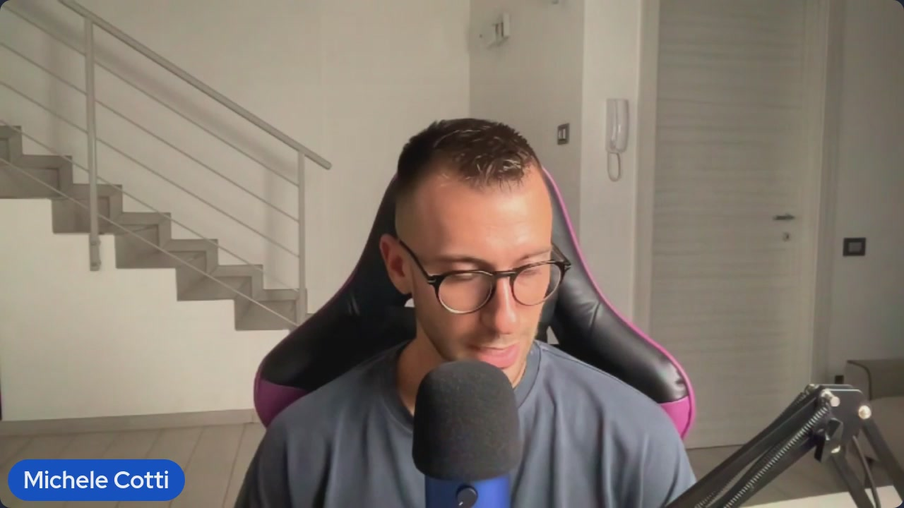
OCR: Michele Cotti
e lasciamo spazio stasera anche a domande. Andiamo a rispondere un po' alle domande, ok? Bene, io direi che si può partire. Andiamo in condivisione schermo e iniziamo con la terza serata del nostro workshop Company Brain.
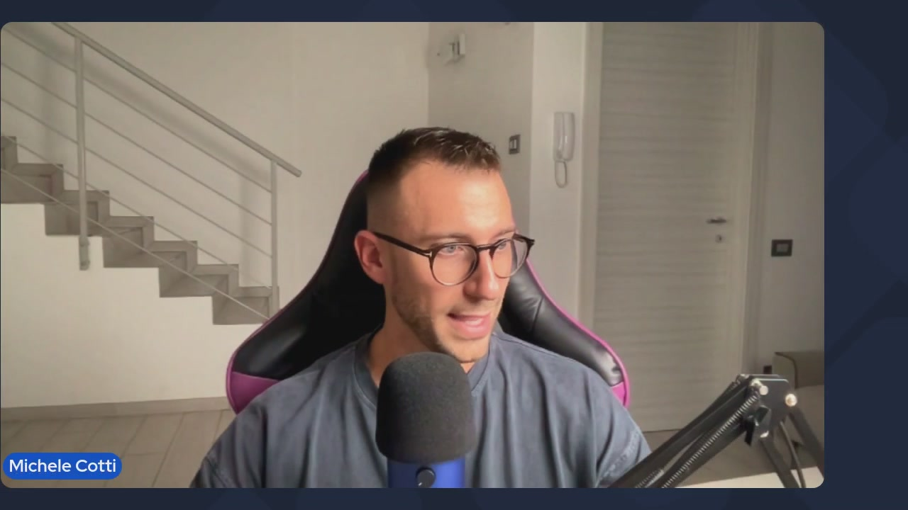
Ci siamo. Benvenuti a tutti alla terza serata. Facciamo un secondo il punto di dove siamo così ripartiamo insieme chiaramente dal posto giusto. La prima sera vi siete fatti la diagnosi della vostra azienda. Nero su bianco il vostro collo di bottiglia. Ieri avete visto il metodo, i sei strati e il cervello che lavora dal vivo davanti a voi. Vi ho fatto vedere cose secondo me molto molto interessanti. Bene, stasera riprendiamo esattamente da lì. Come le altre due sere non ve ne andate chiaramente a mani vuote. Assolutamente. Il regalo di stasera si chiama il primo ingranaggio. Lo strumento che prende un'attività dalla vostra mappa del tesoro che se avete fatto ieri vi avrà mappato tutte le varie attività e le trasforma il vostro come si fa in una procedura scritta. Pronta. Il primo mattone operativo del cervello. Cos'è di preciso e come si usa? Ve lo spiego affinità. Come sempre, chi c'è se lo porta a casa, chi molla metà. No, come è la regola delle tre serate.
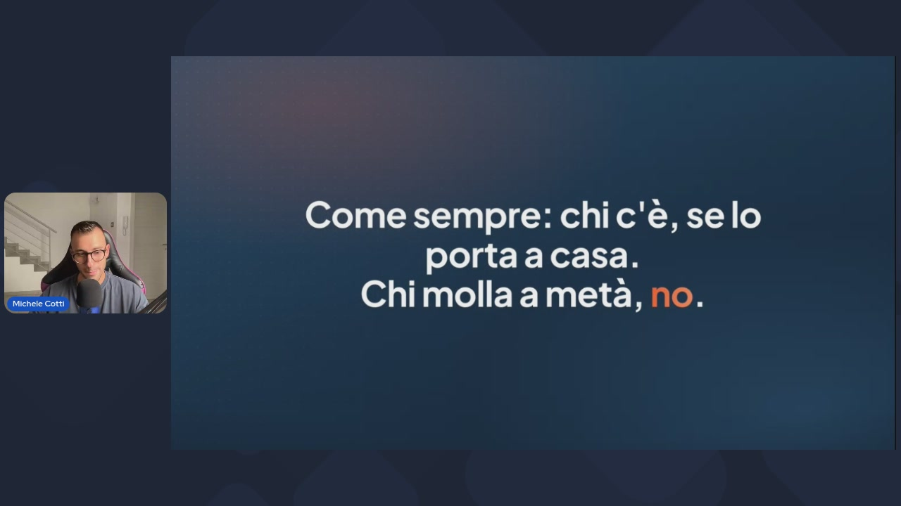
OCR: Come sempre: chi c'è, se lo porta a casa. Chi molla a metà, no.
E adesso torniamo un attimo a noi. Ieri vi ho fatto vedere che il cervello risfonde e sa svolgere un lavoro da solo mentre facevamo altro. Stasera vi faccio vedere fin dove arriva davvero, ok? Quando lo mettiamo a mandare avanti un pezzo di azienda intero dall'inizio alla fine. E come sempre, non ve lo racconto a parole, ma ve lo faccio vedere. Quindi, partiamo. E partiamo da lì, dal darvi qualcosa. Ieri sera vi ho fatto vedere il cervello che va a caccia di clienti da solo. Abbiamo visto in realtà anche più applicazioni, la parte più marketing, quindi anche caroselli, il clone, la parte di copertine, cose un pochettino più marketing, ok? Vi ho dato un lavoro all'inizio della serata, trovarmi 20 clienti in target con i messaggi già scritti e a fine sera ce li aveva portati, mentre noi parlavamo d'altro. Vi ricordate la faccia che magari avete fatto quando avete visto quella cosa? Stasera vi faccio vedere il passo dopo, perché trovare clienti è metà del lavoro, ok? L'altra metà è gestirli, e quella è la parte che probabilmente vi mangia le giornate.
OCR: L'altra metà è gestirli, e quella è la parte che vi mangia le giornate.
Allora, guardate qua, ve lo faccio vedere dal vivo sul mio, con i miei dati veri dentro. Quindi, torniamo e vi ricondivido quella che è la mia dashboard, ok? Allora, andiamo a spegnere lo schermo, Allora, andiamo a spegnere lo schermo, vi condivido lo schermo, e vi faccio vedere quello che c'è direttamente dentro.
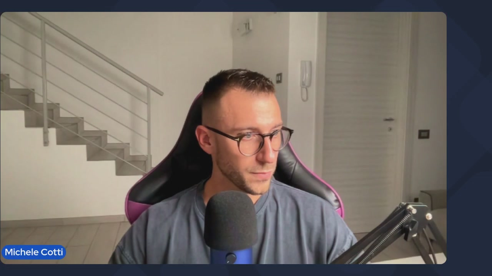
Ok, qui abbiamo, siamo tornati nella nostra lato aziendale, ok? Abbiamo tutti i nostri vari reparti collegati, tutti i nostri strumenti. Ora, voglio fare vedere una parte che poi andrò a spiegarvi,
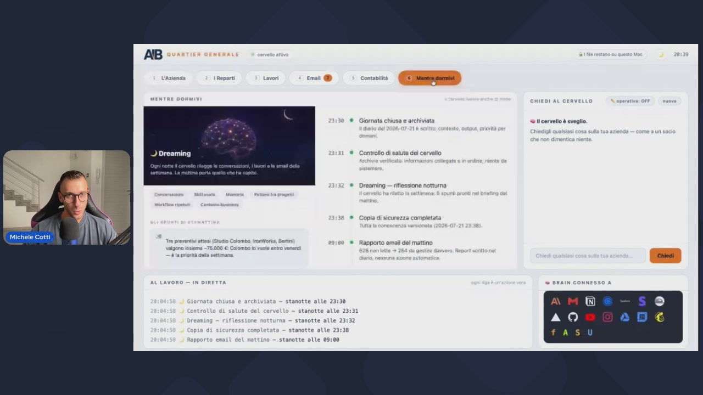
OCR: cervello è sveglio Michele Cotti Rapporto emaî gel matt
che è la parte di Dreaming, quindi le cose che vengono fatte di notte. Quindi di notte, il mio cervello va, si prende, si fa delle riflessioni notturne, si prende degli spunti che al mattino mi porta, e chiaramente va a controllare la salute del brain, vede le informazioni come sono collegate, e nel caso le va a sistemare, e poi archivia tutta la giornata, tutte le chat che va a fare. Quindi anche quando mi chiedevate, ma si prende le sessioni che io faccio, si salvano? Sì, se chiaramente c'è una funzione che ti va a prendere, che ti salva la sessione, poi ti ritrovi a fine giornata con un bel recap di tutte le chat che sei andato a fare. E poi c'hai la parte di Dreaming, quindi di conseguenza ti va a prendere le cose. Tipo qua mi dice tre preventivi attesi, studio Colombo, Ironworks, Bertini, valgono insieme 75 mila euro, eccetera, eccetera, eccetera. E qui lui si va e si prende, si guarda le email, fa tutto un lavoro di notte, che poi la mattina mi fa ritrovare. Ora vi faccio vedere un po' di applicazioni, dato che tanti mi dicevate delle email. Io qui ho collegato la mia casella delle email, come già vi facevo vedere, quindi ho le parti in arrivo, ho la parte di bozze,
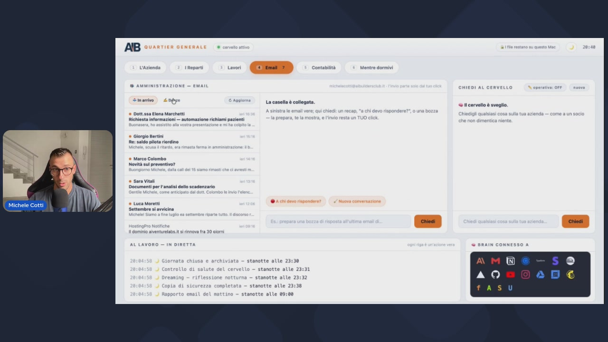
OCR: La casella è collegata. Sara Vitali Documenti pe l'analisi dello sesdenzario Michele Cotti j Luca o ti cervello è sveglio.
ed è collegata chiaramente alla mia vera casella email. E qui io posso tranquillamente andare a dirgli fammi un recap delle ultime email arrivate. E posso andare a chiedere. E lui cosa fa? Prende, va, mi va a leggere le mie email, ok? E chiaramente mi fa un recap delle ultime email se c'è qualche azione che devo fare. E qui mi dice, richiesta info automazione, Giorgio Bertini che chiede un'altra cosa, Marco Colombo, novità super preventivo, Luca Moretti, Ostinger, eventi PMI, Andrea Zago, Paola Bianchi. Vuoi che entri nel dettaglio di qualcuno in particolare? Esempio Marchetti, Colombo, Bertini, sembrano richiedere una risposta, eccetera, eccetera. E io chiaramente se entro, posso fargli leggere tutto il tray della email o fargli già preparare la bozza. Ma torniamo ad un qualcosa di un attimo più pratico, perché se vedevate, mentre dormivo mi diceva lo studio Colombo. Quindi io posso anche nella parte qua laterale del mio brain chiedergli, mi fai un recap dello studio Colombo?
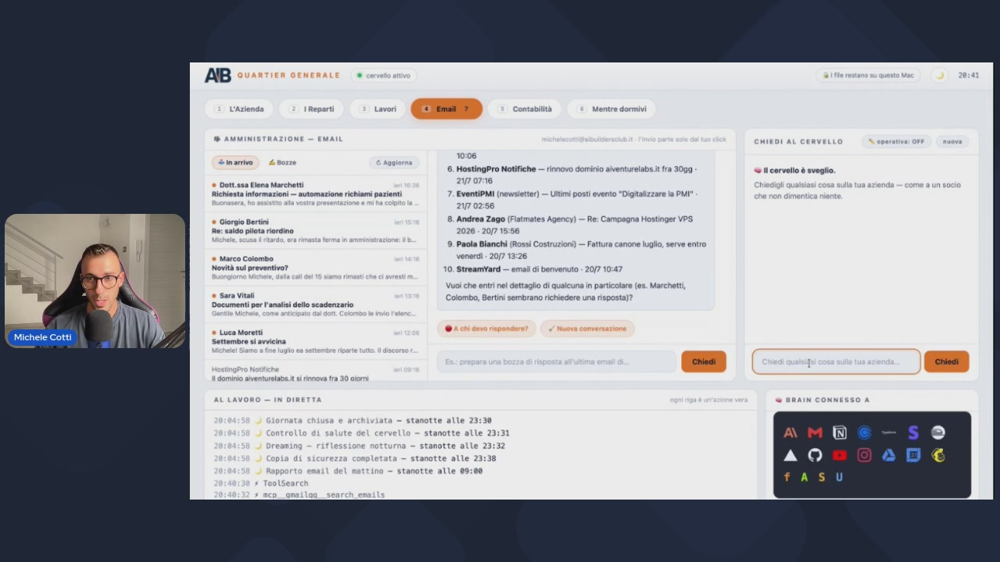
OCR: Giorgio Bertini Documenti per l'analisi dello scadenzario Settembre si avvicina MostingPro Notifiche — ornio aventurelabs.it fra 3099 ti cervello è sveglio 7. EventiPMi (newsletter) — Ultimi posti evento "Digitalizzae la PMI 21702:56 Andrea Zago (Fiatmates Agency) — Re: Campagna Hostinger VPS 2026 - 20/7 18:86 Paola Bianchi (Rossi Costruzioni) — Fattura canone luglio, serve entro venardì- 20/7 13:26 StreamYard — emali di benvenuto - 20/7 104 Colombo, Bertini sembrano richiedere una risposta)?
Quanto magari a voi capita di avere dei clienti che dovete recuperare le informazioni? E se all'interno del vostro brain c'è tutto, ok, c'è un business dedicato, ok, si va a leggere tutta la varia cosa. E mi dice, studio commercialisti di Bergamo, cosa ha fatto, chi sono i referenti, lo storico dei lavori. Quindi, di conseguenza, cosa è stato fatto col discoping del 15 luglio? Quindi mi va a prendere anche le note della call, perché probabilmente va dentro il not taker. Il budget, Marco, non ha problemi di prezzo. Stato attuale, manca il preventivo. Atteso entro fine luglio. Quindi, di conseguenza, io potrei chiederlo o direttamente in chat di farmi il preventivo, oppure posso andare nella parte dei lavori, ok, scusate, nella parte dei reparti, dove ho la parte di vendita e clienti, e andare nella parte di preventivi, che è collegato a quello che è la nostra generazione di preventivi. Quindi se io vado qua e gli dico, studio Colombo, di base lui ha a knowledge base tutte le call che abbiamo fatto, tutta la parte dello studio Colombo.
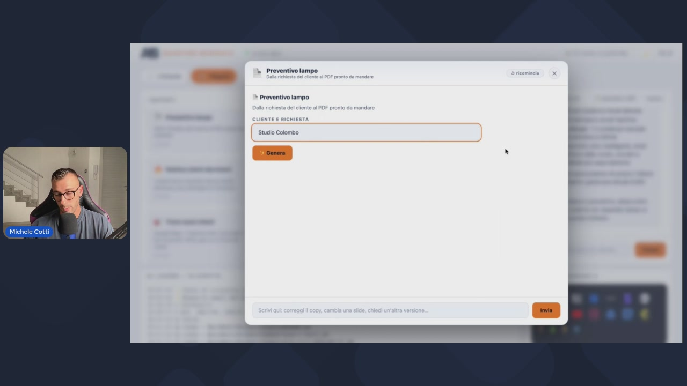
OCR: Preventivo lampo Preventivo lampo Michele Cotti
E io gli faccio genera. E lo lascio lavorare. Nel frattempo vediamo comunque che nella parte di azienda
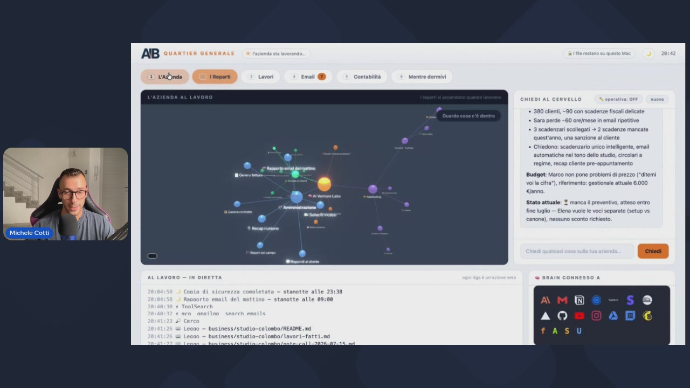
abbiamo sempre il nostro brain che va a lavorare. Ovviamente, nella parte dei lavori,
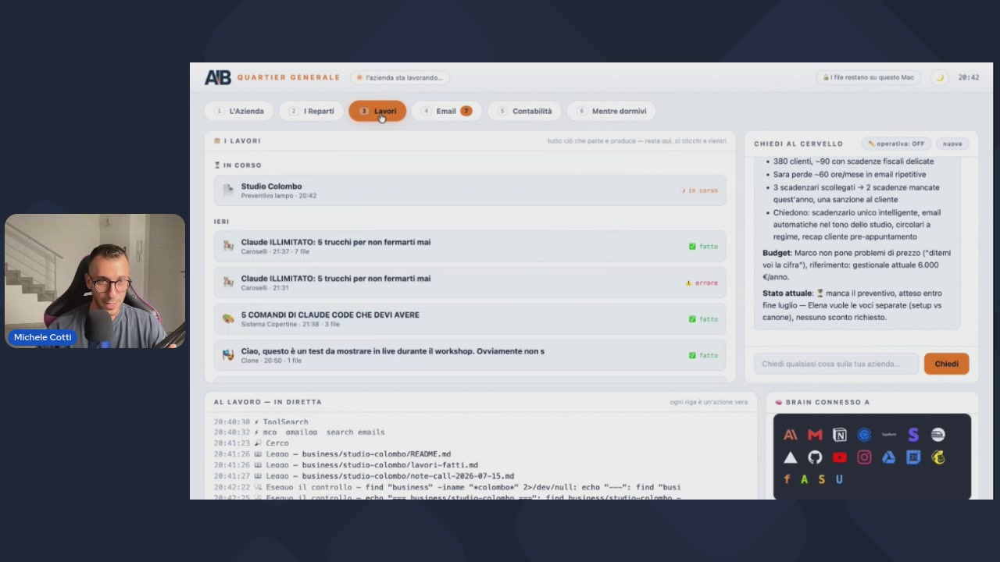
OCR: + 390 cienti,-90 con scadenze fiscali delicate + Sara parde -60 ore/mese in emal ripetitive Studio Colombo + 3 scadenzari scollegati + 2 scadenze mancate automatiche ne tono dell studio, circolari Claude ILLIMITATO: 5 trucchi per non fermarti mai vento: gestionale attuale 6.000 Claude ILLIMITATO: 5 trucchi per non fermarti mai fine luglio — Elena vuole le voci separate ( 5 COMANDI DI CLAUDE CODE CHE DEVI AVERE canone), nessuno sconto richiesto. Michele Cotti ) Ciao, questo è un test da mostrare in live durante l workshop. Ovviamente non s — business/studio-colombo/README. nd Business/studio-colonbo/lavori=fatti.mi business/studio-colonbo/note-call-2826-07-15.nd
lui si sta generando il preventivo. Appena avrà finito il preventivo, chiaramente sarà già pronto, ok? Pronto da visualizzare, da scaricare, e potrà già fargli una bozza. Automatica, da inviare a quello che è il cliente. Ovviamente, anche qui, tutto fattibile dalla dashboard, ok? Perché? Perché l'abbiamo mampato all'interno della dashboard. Ma tutte queste cose voi le potete fare tranquillamente dalla vostra chat, ok? Dipende poi ognuno come è comodo, ok? Stessa cosa lo si può fare anche lato contratualistica, ok? Quindi andiamo sempre nella parte dei reparti, intanto che lui genera il preventivo. Dato che, chiaramente, il contratto parte solo dal momento che il preventivo è stato approvato. Perché se il preventivo non è stato approvato, chiaramente non si può fare un contratto. Quindi andiamo nella parte di amministrazione e facciamo genera contratto. E gli diciamo Rossi Costruzioni. Che qui è una persona che ha già approvato un preventivo, ad esempio, che ha già fatto un preventivo. E lo lasciamo lavorare. Nella parte dei lavori, oggi è stato fatto studio Colombo.
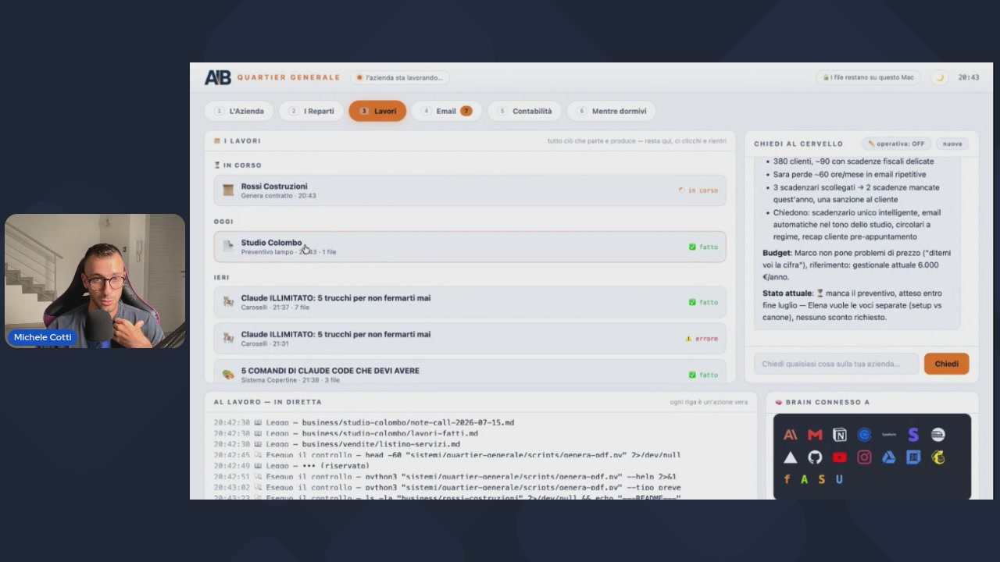
OCR: Michele Cotti Claude ILLIMITATO: 5 trucchi per non fermarti mai Claude ILLIMITATO: 5 trucchi per non fermarti mal 5 COMANDI DI CLAUDE CODE CHE DEVI AVERE denza fiscali deicate + Sara perde -60 ore/mese in emal ripetitive + Chiedono: scadenzario unico intelligente, email sutomatiche nel tono dell studio, circolari a Budget: Marco non pone problemi i prezzo (eitemi vola cifra”), riferimento: gestionale attuale 60 Stato attuale: ? manca ll preventivo atteso entro fine ugo — Elena vuol e voci separate (setup vs
Apriamolo. Bene, io posso scaricare il PDF, oppure me lo fa direttamente aprire qua. Adesso vi rimando in condivisione, perché ho visto che non ve l'ha aperto. Quindi almeno ve lo faccio vedere direttamente dal vivo.
Ok. Ve lo ripresento. Dato che non vi avevo condiviso correttamente tutta la finestra, ok? Quindi vado in condivisione e vedete come mi ha creato il preventivo pronto, ok?
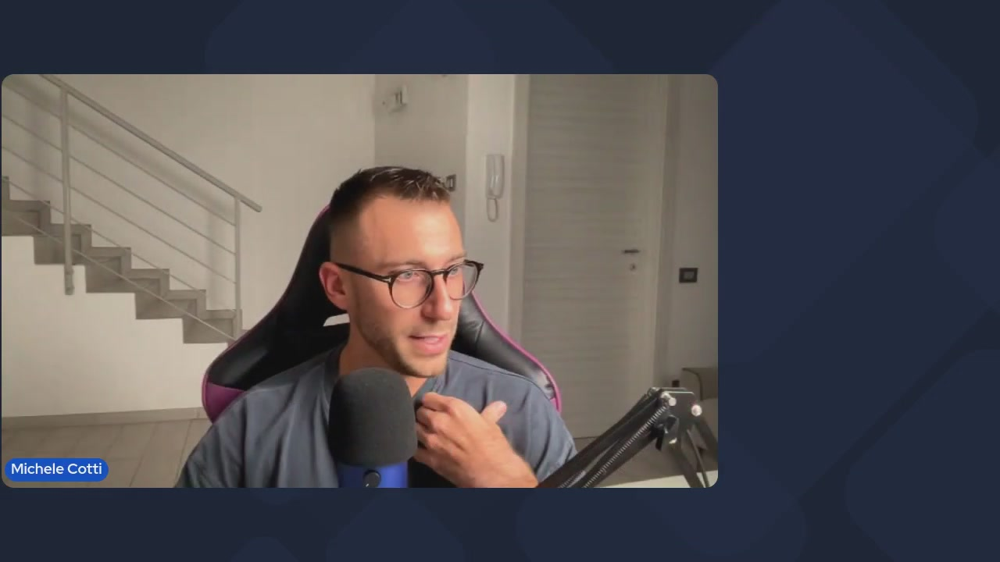
Se io da qua lo chiudo,
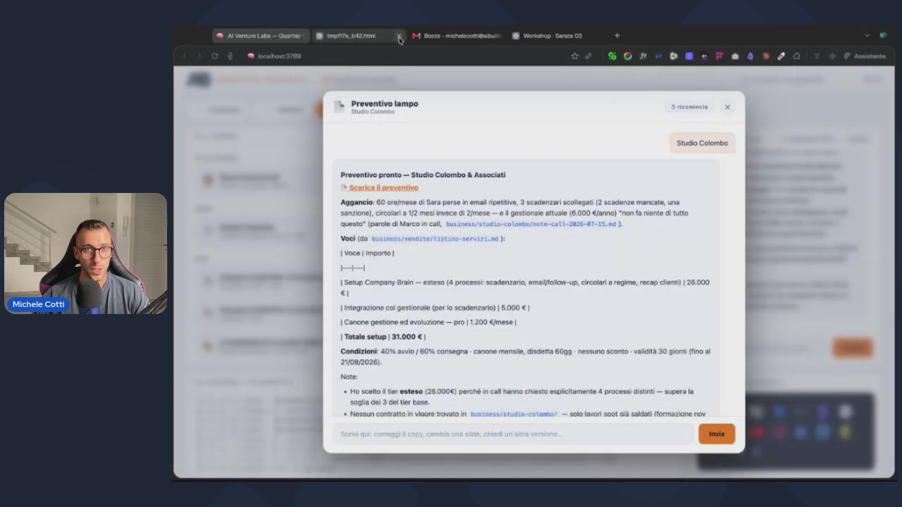
OCR: © nivemsotata — Quote | (mora baz fp M por mcrsncomenzao L Preventivo lampo Preventivo pronto — Studio Colombo & Associati Michele Cotti Totale setup | 31.000 €
ve lo riapro da qua, ok? Vedete come mi ha creato il mio preventivo pronto sulla base di quello che ci eravamo detti, sulla base che la persona voleva la divisione delle due cose e c'è il preventivo pronto da andare a consegnare, ok? E se io cosa faccio?
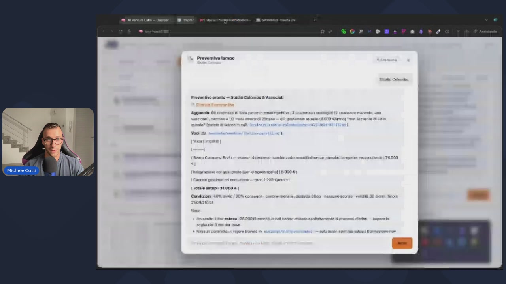
OCR: Ki Verne tato — Omero mo Praventiva lampo Preventivo pronto — Studio Colomba 8 Azzociat Aaga Michele Cotti Condizioni dl
Da qua gli dico, guarda va benissimo, potrei chiaramente farglielo modificare, oppure posso dirgli, guarda, generami una bozza. Così, tanto hai già l'email, il preventivo è già pronto, bene, facciamogli fare la bozza. E allora di conseguenza cosa succede? Io posso tranquillamente anche uscire da qua e lui andrà a generarmi la bozza del mio preventivo direttamente in Gmail collegata alla mia email, già con collegato il preventivo che ha appena generato. Anche qui, come funziona? Si parte dalla base che, ok, bozza in Gmail, si parte dalla base che c'è un modello di preventivo con chiaramente quello che vi dicevo ieri, no? Poi ci sono le procedure, ci sono il come si fanno i preventivi, come di base cosa ci va nei preventivi e lo prende direttamente da tutte le chiamate che noi abbiamo fatto con questo cliente. Se io poi vado nella parte di email, ok, nella parte di bozze, c'è il nostro preventivo Company Brain e da qui vediamo come c'è tutto. Io adesso vi apro anche la mia vera bozza di Gmail, ok, e vedete come dentro c'è praticamente
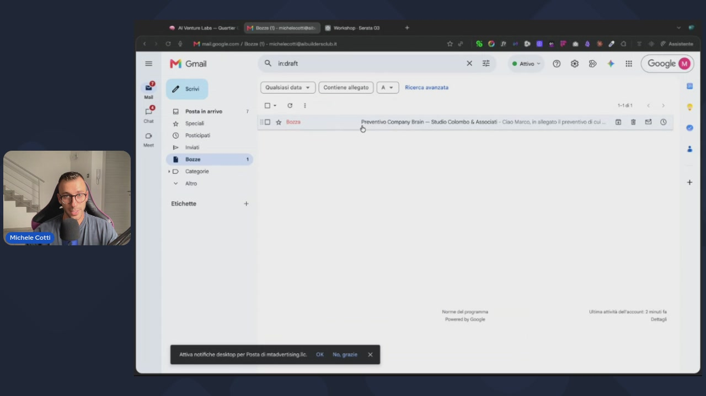
OCR: Q indraft Etichette Michele Cotti
il preventivo Studio Colombo, ok? Con allegato chiaramente il nostro preventivo
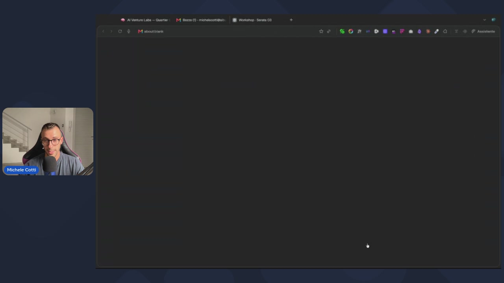
OCR: © 1 Vere Lato — Quante: M Bce) moteeconimae, |M} Werkatop: Bota 03 + e PA atri fe GONO Fadsk2a ) © Arniiento
che abbiamo appena creato, ok? Che mi ha appena creato con la nostra... Calcolate quanto vi rende veloce il lavoro una roba di questo tipo, ok? Passate dal chiedere cosa ha fatto quel cliente, vi dà tutto il recap, al andare si crea il preventivo e si genera la bozza basata su tutta la chiamata che noi c'eravamo fatta. Dentro trovi le voci separate, setup e canne di come chiedeva Elena, tutto direttamente collegato, ok? Questa secondo me è una figata. Adesso sta ancora andando a generare il contratto, però per farvi capire, questa era una dimostrazione per farvi capire che dal momento che avete clienti e tutto entra nel vostro company brain, voi potete reperire tutte le informazioni dei clienti, potete generare preventivi direttamente da lì, farlo dalla chat, oppure farlo direttamente con un click, ok? Tutto poi dipende dai processi che voi avete. Avete che in automatico volete che il preventivo venga fatto appena è chiusa la chiamata? Va benissimo, ok?
OCR: Rossi Costruzioni * Sara perde -60 ore/mese in emall ripetitive + 3 scadenzariscollegati + 2 scadenze mancate ogm. recap conte pre-appuntamento Budget Stato attuale: 2 manca lì oeventivo atteso entro Claude ILLIMITATO: 5 trucchi per non fermarti mai fine lugo Michele Cotti Claude ILLIMITATO: 5 trucchi per non fermarti mai anne), Nessuno 3000 5 COMANDI DI CLAUDE CODE CHE DEVI AVERE Lonbo/note-ca11-2026-0
Arriva la fine della chiamata, ci sarà un trigger che fa partire la generazione del preventivo sulla base delle cose. La bozza ve la genera in automatico. Io volevo farvi vedere gli step. Tutta quella cosa qua può essere fatta anche in un colpo solo, ok? L'importante è capire che effettivamente li possiamo andare ad attaccare a qualsiasi cosa. Anche la bozza? Bene, noi abbiamo già il nostro tono di voce, lui entra, si legge il nostro tono di voce, si guarda quello che è il preventivo, cosa c'è all'interno del preventivo e va a creare effettivamente la bozza della nostra email che noi adesso potremmo inviare, ok? Con all'interno tutto quello che c'è. Anche qui le nostre email. Bene, vogliamo approfondire la parte di Colombo? Glielo chiediamo. Vogliamo fargli fare una bozza? Glielo chiediamo e lui ce la genera. Ma non generata dal nulla come una chat, ce la genera sul nostro tono di voce, sulla conversazione che abbiamo avuto prima e quant'altro, ok? Tutto fatto in questo modo. Ora, sta ancora lavorando alla generazione del contratto? Chiaramente ci vuole un attimo di più
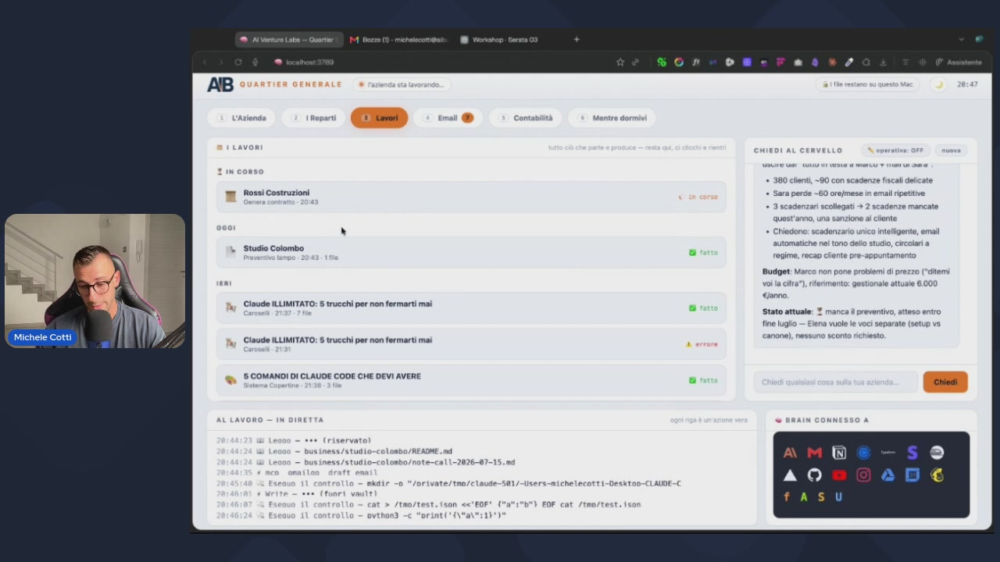
OCR: © Ai rta Late — ut DM TE Rossi Costruzioni ‘+ Sara perc -0 ore/mese in emali ripete + 3 resdenzari scollegati + 2 scadenze mancate Budget: Marco non pone problemi di prezzo ("citemi Claude ILLIMITATO: 5 trucchi per non fermarti mai Stato attuale: 2 manca l preventivo atteso entro È fin luglio — Elena vuole le voci separate (setup Michele Cotti Claude ILLIMITATO: 5 trucchi per non fermarti mai ancona), nessuno sconto richiesto 5 COMANDI DI CLAUDE CODE CHE DEVI AVERE
perché deve prendere dati e quant'altro, ma abbiamo capito il concetto, ok? Abbiamo capito il concetto di come effettivamente si può passare da presa di una, come dire, un recap totale dei nostri clienti, ok? Ci ha fatto anche la parte del contratto. Apriamolo, bene, ok? Ci ha fatto il contratto, scarica il contratto,
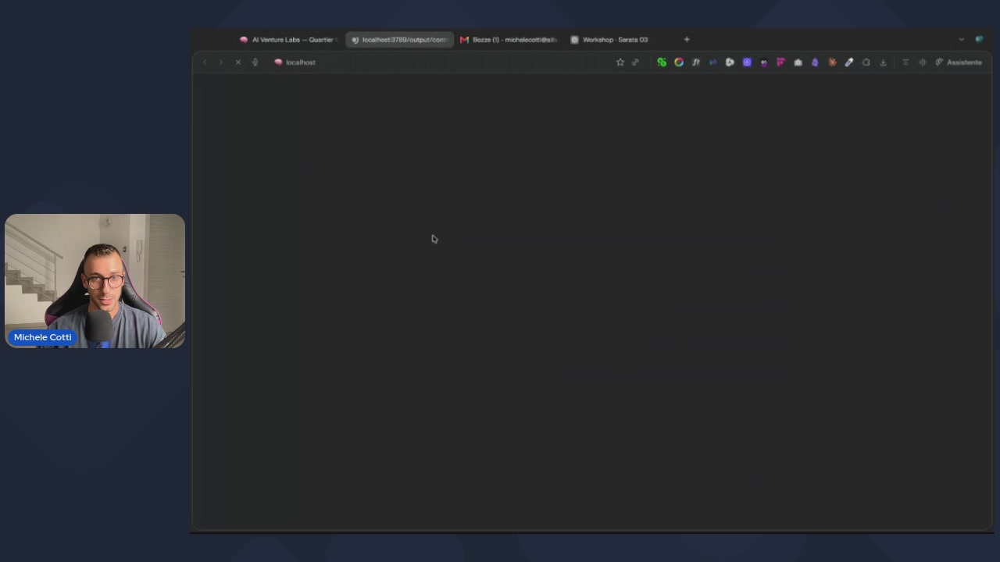
OCR: 4) icon TEO maicon PA Bere (O. mataeconne 18 riosenco serma 00 de SOnOBrFaaw20a
ce lo apriamo e c'è il nostro contratto, ok? Con già i nostri dati, con il committente, con tutte le varie, i suoi dati presi, chiaramente, dal nostro company brain, il contratto già pronto, con l'importo e le varie cose da inviare. E anche qui, chiaramente, potremmo andare a crearla,
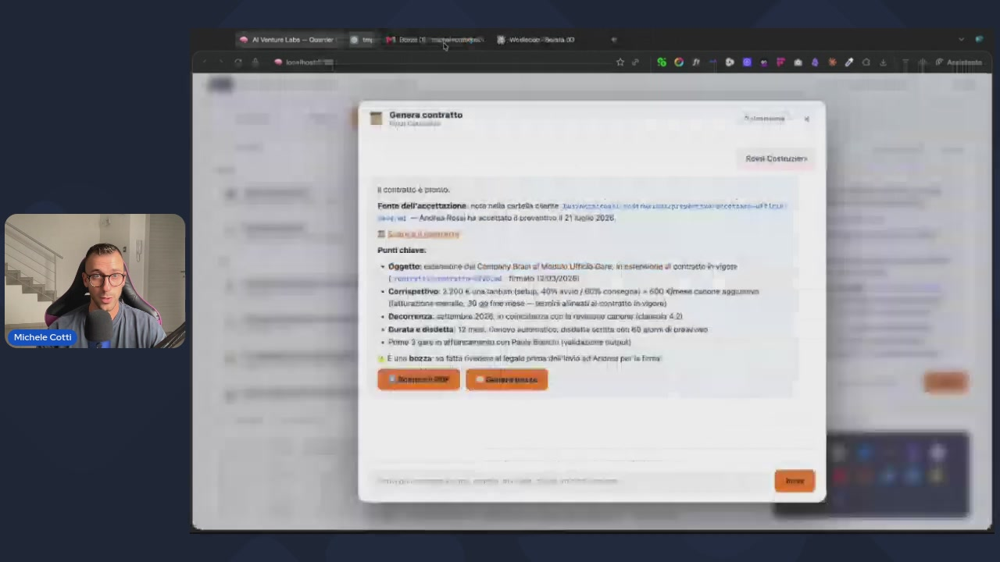
OCR: ® Ni vensetabo ques: Mm DI Genera contratto Fan dall'arosttazione dagetto + Decomenza Durata e alcietta Michele Cotti
generare la bozza su Gmail e poi andare ad inviarlo alla persona. Capite quanto questa cosa qua vi va a far risparmiare un botto di tempo, ok? Ovviamente, anche qui, sono tutti sistemi che dietro sono attaccati al nostro company brain e sono attaccati, chiaramente, a tutti i nostri connettori. Ognuno, chiaramente, avrà i propri, ok? Ora, torniamo a noi.
Torniamo a noi e torniamo alla nostra presentazione perché, secondo me, questa è la parte di preventivi, bozze e quant'altro, ossia proprio quello che a voi tira via più tempo, alla maggior parte degli imprenditori, tira via davvero tanto, tanto tempo. Vedete come in due clic si passa dall'avere il quadro generale di un cliente ad avere il preventivo pronto già in Gmail con la bozza da inviargli. In più si può attaccare la parte di follow up. Gli si dice a chi abbiamo inviato i preventivi che non ci hanno ancora risposto e in automatico genera i follow up. Oppure lo mettiamo nella nostra parte di Dreaming, che adesso vi spiego un attimo anche cosa significa la parte di Dreaming. Quindi torniamo alla nostra presentazione, ok?
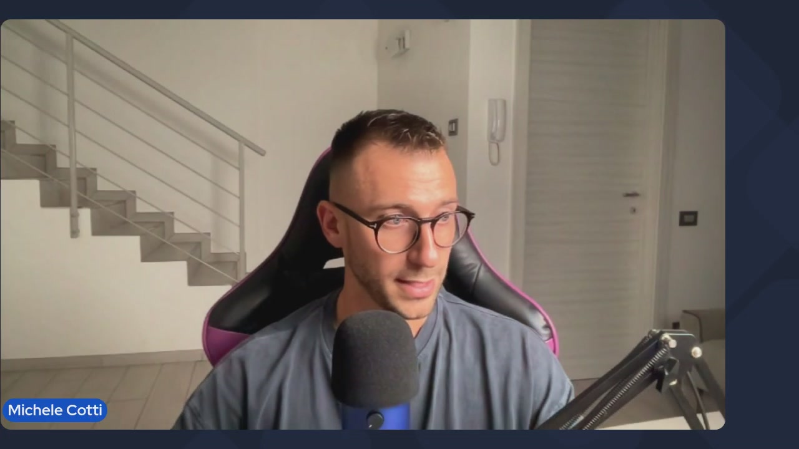
Ora, fatevi un attimo, fermatevi un attimo e guardate cosa avete davanti, ok? Non è il cervello che risponde a una domanda, ok? È un pezzo della mia azienda che gira da solo, dall'inizio alla fine. Entra la richiesta, esce l'offerta, il preventivo, quello che sia, parte il follow up, il collaboratore ha il suo compito, ok? E io in mezzo non ci sono. Prima questa roba passava tutta dalle mie mani, ogni singolo pezzo. Oggi invece passa da qui e io la controllo, non sono più io in prima persona a farla, non la faccio. Questo era solo un esempio, ok? Ora so che magari molti di voi non hanno così tante richieste di clienti ogni giorno, magari questo è pensato più per uno studio di commercialisti o magari di avvocati che hanno tante richieste, ok? Ma anche se non avete questi volumi, capite le potenzialità di scaling che vi dà uno strumento come questo, ok? Lo capite le potenzialità che vi dà uno strumento come questo? Apriamo la chat un secondo e ditemi un attimo quanto potenziale
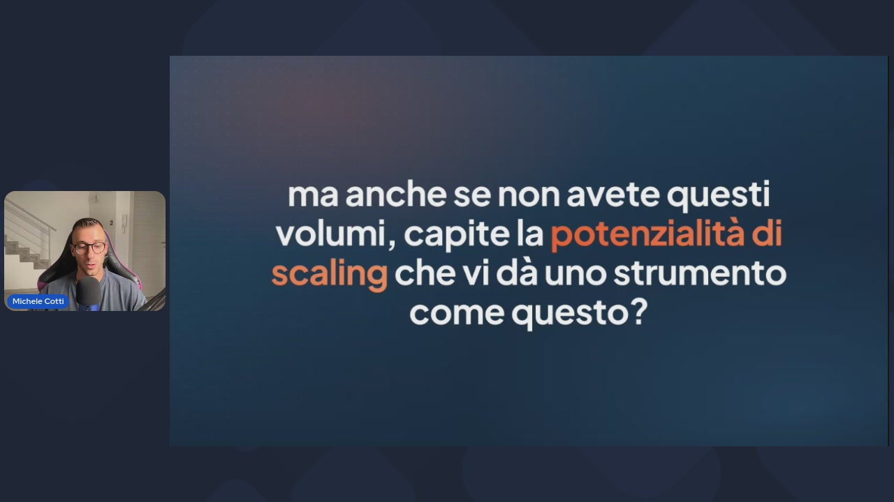
OCR: ma anche se non avete questi volumi, capite la potenzialità di scaling che vi dà uno strumento come questo?
vedete in questa cosa. Credo che se pensiate ai processi ripetitivi della vostra azienda, una roba di questo tipo che vi genera preventivi, fatture, contratualistica, quanto potenziale ha, ok? Ovviamente ognuno per la propria, ok? Assolutamente sì, molto potenziale, molto, certo, tanto, decisamente esponenziale come potenziale, tanto, moltissimo. Vedete come tutti sono qua dentro, ok? Richiudiamo la chat che continuiamo. A me pare una figata enorme, assolutamente, cioè quanto è potente, ok? Voi di fatto fate un passo più in alto rispetto a quello che è l'organigramma della vostra azienda, con quella roba qua. Iniziate davvero a gestire processi e creare sistemi. Quindi la possibilità che avete di fatturare di più con potenzialmente meno coinvolgimento e meno tempo da parte vostra è una leva, secondo me, enorme. E questo è il vero messaggio che vi voglio trasmettere, ok? È proprio questo.
OCR: È questo ilvero messaggio che vivoglio trasmettere.
E questo è esattamente quello di cui parlavamo la prima sera. Se ve lo ricordate. La domanda scomoda che vi avevo fatto. Se domani spariste una settimana, la vostra azienda andrebbe avanti o si fermerebbe? Ecco, questo è un pezzo di azienda che va avanti anche se voi non ci siete. Perché non vive più solo nella vostra testa. Vive nel cervello. Scritto. E il cervello non va in ferie e non si dimentica niente. Questo è il bello. Ma c'è una cosa che secondo me è la più incredibile di tutte. Perché fino a qui vi ho mostrato il cervello che lavora di giorno, mentre voi lo guardate. Ma la parte che a me ha fatto dire wow la prima volta è quella che vi ho mostrato un attimo fa. È quello che fa di notte. Quando voi avete chiuso il computer e siete andati a dormire. Ci avete mai pensato a cosa fa il vostro cervello, quello vero, mentre dormite? Non si spegne, ok? Entra in una fase, la chiamano REM. In cui rimette in ordine tutta la giornata. Butta via quello che non serve, tiene quello che conta e collega i ricordi nuovi a quelli vecchi. Vi svegliate e certe cose che la sera prima erano un casino,
OCR: Visvegliate, e certe cose che la sera prima erano un casino, la mattina sono chiare.
la mattina sono chiare. Non è magia, ok? È manutenzione, fatta mentre voi non ci fate nemmeno caso. Ecco, il company brain può fare esattamente questo. E l'abbiamo chiamato il dream cycle, quindi il ciclo dei sogni. Di notte, mentre voi non ci siete, si mette a lavorare su se stesso. E adesso vi dico cosa fa. Una cosa alla volta, perché ognuna di queste è un pezzo di lavoro che si toglie dalle vostre spalle. La prima, la prima cosa, mettere in ordine la giornata. Tutto quello che è entrato durante il giorno, le mail, gli appunti buttati lì di fretta, le note prese tra una riunione e l'altra. Di notte lui le riprende, una per una, capisce di cosa parlano e le mette al posto giusto. Voi la mattina non trovate il mucchio da sistemare, ok? Trovate già tutto in ordine, come vi ho fatto vedere anche a me prima. La seconda, e qui inizia il bello. Le pagine povere, quelle dove c'è scritta mezza riga e basta, se le va a ingrassare da solo. E la parte interessante è come decide di cosa e chi occuparsi.
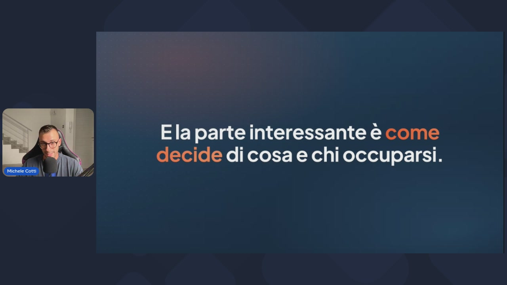
OCR: Ela parte interessante è come decide di cosa e chi occuparsi.
Capisce da solo cosa è importante in base a quante volte una cosa torna fuori. Se un nome lo nominate una volta sola, tiene giusto una riga, tanto per non perdertelo magari. Ma se quello stesso nome torna tre, quattro volte in giorni diversi, lui capisce che conta. E allora va a cercarsi le informazioni. Anche fuori si costruisce la scheda completa di quella determinata cosa. Nessuno glielo dice, ok? Lo decide lui, guardando cosa ricorre nella vostra vita. Esattamente come fareste voi, se solo ne aveste il tempo. E poi la terza cosa, fa il bibliotecario pignolo. Quello che voi non sarete mai, diciamocelo, ok? Nessuno di noi lo sarà mai. Di notte ripare i collegamenti rotti, sistema i riferimenti che non tornano. E se avete scritto due volte la stessa cosa, magari su uno stesso cliente, in due momenti diversi e con due parole diverse, lui se ne accorge e le fonde in un'unica cosa sola. Niente doppioni, niente due versioni della stessa verità che poi non sai effettivamente a quali credere, ok?
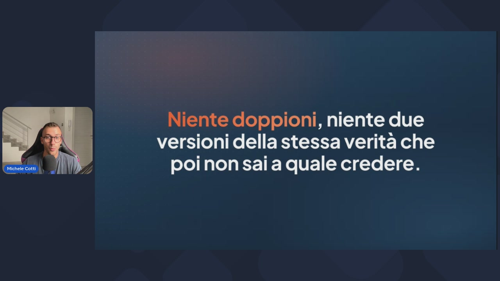
OCR: Niente doppioni, niente due versioni della stessa verità che poi non sai a quale credere.
Lui li fonde. Una cosa sola, giusta, pulita. Non vogliamo cose doppie all'interno del brain. E poi c'è la quarta, che è quella che, quando l'ho capito io, mi ha fatto venire la pelle d'oca, credetemi. Il cervello vi fa da coscienza critica. Quindi di notte va a confrontare le cose vecchie con quelle nuove e cerca le contraddizioni. Quindi vi faccio un esempio concreto. Magari l'anno scorso avete scritto da qualche parte che una certa strategia che avevate provato non aveva funzionato, ok? Ieri, senza ricordarvelo più, avete magari appuntato di volerla riprovare. Lui trova il conflitto e la mattina ve lo mette davanti e vi dice guarda che questa cosa un anno fa era andata male, sei sicuro di volerci ritornare? Avete presente quando un socio in gamba vi ferma e vi dice aspetta, ce l'avevi già provato e non era andata? Ecco, lui fa esattamente quello, ok? Solo che questo socio non si dimentica niente, mai. Perché tutta la vostra storia ce l'ha scritta dentro. E come fa a fare tutto questo di notte senza incasinarsi
OCR: Ecome faa fare tutto questo di notte senza incasinarsi e senza costarvi una fortuna?
e senza costarvi una fortuna? Divide il lavoro in due squadre come un'azienda fatta bene. Una squadra fa i lavori meccanici, veloci, ripetitivi, a costo zero. Mille cosine noiose sbrigate in un attimo. L'altra squadra invece, quella che ragiona davvero, ragiona in causa solo quando serve un giudizio, una scelta difficile, una sintesi complicata. La manovalanza fa girare la macchina, ok? E la testa buona la usa solo dove serve davvero. Non spreca niente, ok? Non va a sprecare niente. E poi arriva la quinta cosa, che sul lungo periodo è praticamente la più sorprendente di tutte. Ogni volta che di giorno il cervello fa fatica a capire qualcosa e ci deve mettere impegno e risorse, di notte va a studiare quel momento di fatica. E si scrive da solo una regola nuova, più furba, così la volta dopo quella stessa cosa la riconosce al volo, da solo, senza fatica e senza costi aggiuntivi, ok? Capite cosa vuol dire quella roba qua? Pensateci un attimo. È assurdo, ok?
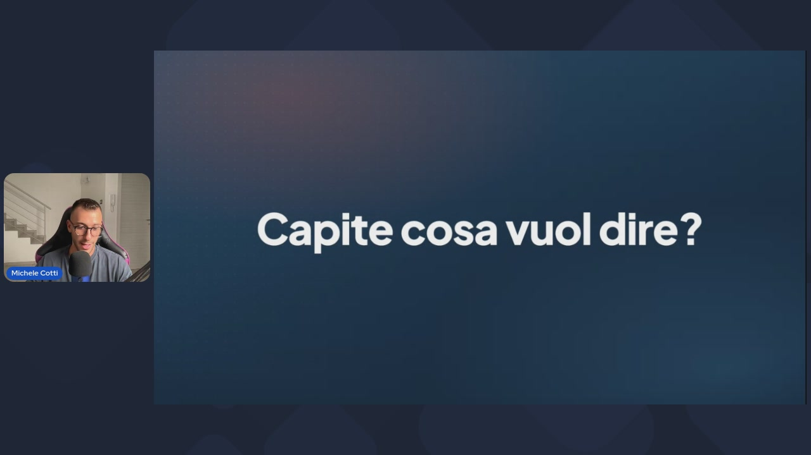
OCR: Capite cosa vuol dire?
Vuol dire che più passa il tempo, più questo cervello diventa veloce e più costa poco a tenerlo acceso. È l'esatto contrario di qualsiasi cosa che compriate di solito, che dal giorno dopo inizia ad invecchiare e prima o poi va sostituita. Il cervello migliora da solo, di notte, gratis, mentre voi dormite, ok? E poi c'è l'ultima cosa, quella con cui vi svegliate in mano. Prima di chiudere il ciclo, il cervello guarda cosa avete in sospeso, quello che vi faceva vedere anche prima. Le mail a cui non avete risposto, gli impegni, le cose lasciate a metà. E vi prepara l'agenda del giorno dopo, vi dice controllate questa cosa. Guarda che c'è questa cosa che sta aspettando. Vi alzate, aprite il computer e c'è già scritto da dove partire. Non la pagina bianca delle sette del mattino, ok? Un punto di partenza pronto che qualcuno ha preparato per voi mentre voi non c'eravate. E adesso fermatevi un secondo e mettete insieme tutto quanto. Mentre voi dormite c'è qualcosa che mette in ordine la vostra azienda. L'arricchisce andando a cercare cose nuove, ripara i pezzi rotti.
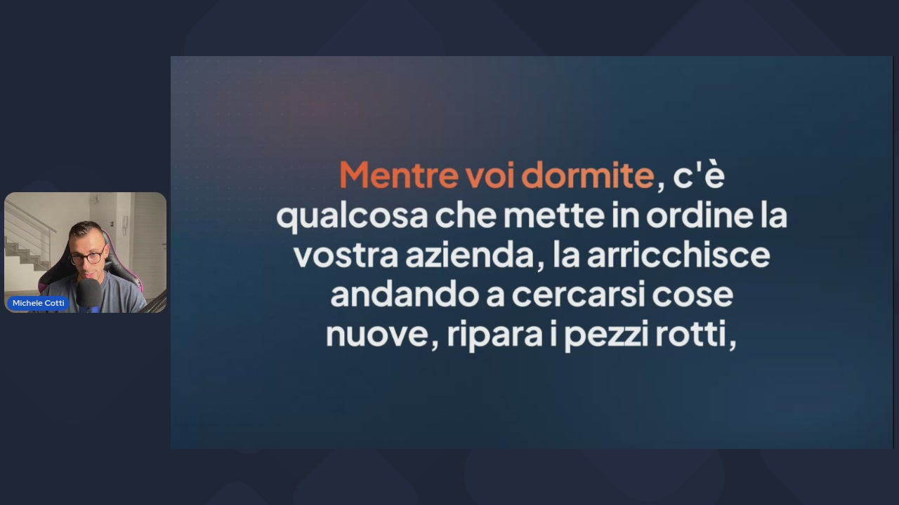
OCR: Mentre voi dormite, c'è qualcosa che mette in ordine la vostra azienda, la arricchisce andando a cercarsi cose nuove, ripara i pezzi rotti,
Vi segnala dove vi state contraddicendo, diventa più bravo ed economico e vi prepara la mattina. Tutto questo senza che voi gli diciate una singola parola perché è stato programmato all'interno. Ricordate il genio senza memoria della prima sera? Ecco, quello che ogni mattina si svegliava e aveva dimenticato tutto di voi? Bene, adesso non solo si ricorda tutto. Di notte, mentre voi non ci siete, mette in ordine i ricordi da solo. Li collega, si corregge e si sveglia più intelligente di come era andato a dormire. Esattamente come di base fa ognuno di voi. Ma senza stancarsi mai e senza saltare una notte. E questo è il momento preciso in cui il cervello smette di essere una cosa che usate e diventa una cosa che vive. Un archivio di notte sta lì fermo e prende polvere, ok? Non fa niente. Il vostro cervello invece di notte lavora per voi. Ed è tutta qui la differenza che conta. La differenza tra avere un magazzino di informazioni e avere invece un socio che vi aiuta. Ok? È una cosa completamente diversa.
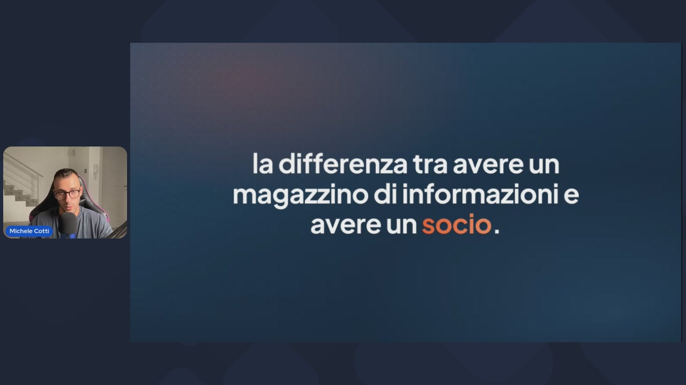
OCR: la differenza tra avere un magazzino di informazioni e avere un socio.
Il magazzino ce l'avete già adesso, sparso magari in decine di cartelle diverse e non vi ha mai aiutato a dormire una notte in più. Un socio che di notte vi sistema la casa e la mattina vi dice da dove ripartire. Quello no. Quello ancora non ce l'ha, immagino, nessuno di voi in questa stanza. Ok? Non credo che ce l'abbia nessuno attaccato alla vostra azienda. E stasera vi ho appena fatto vedere che si può avere. Ok? Prima di proseguire però voglio farvi conoscere una persona. Voglio farvi conoscere Smeraldo. Adesso lo portiamo sul palco. È un imprenditore che abbiamo seguito nella costruzione di questo Company Brain. Ok? E voglio portarvelo a farvi raccontare un po' quello che è la sua storia. Quindi adesso eccoci qua. Ciao Smeraldo. Ciao Michele, ciao a tutti. Buonasera, come stai? Bene, bene. Stanco ma felice. Come da buon imprenditore. Ottimo, ottimo.
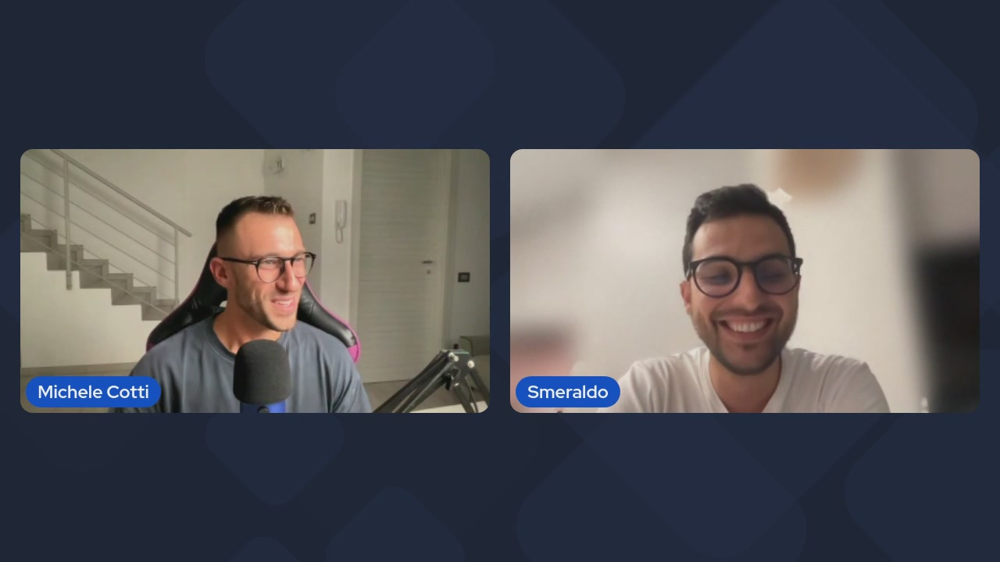
Allora io ti direi, se ti va di dirci proprio in 20 secondi chi sei e cosa fai? Così che contestualizziamo un po' le persone che ci stanno guardando. Certo, mi chiamo Smeraldo, sono un imprenditore. Ho iniziato 14 anni fa questo percorso imprenditoriale. Questa è la terza impresa, si chiama Blinku. 7 Milioni e mezzo di raccolta capitale, quindi comunque una start up. Insomma, sono sei anni ormai che faccio questo. Ultimamente stiamo cercando di sfruttare tutto quello che c'è appunto disponibile sul mercato, tra cui le cose che abbiamo fatto assieme, per effettivamente accelerare, ma soprattutto liberare il mio tempo, perché sono veramente stanco. È la cosa più importante. Ho bisogno di recuperare un po' di vita. Da buon imprenditore hai tanti anni di spingi, spingi, spingi, e poi a un certo punto hai bisogno chiaramente di automatizzare le cose, perché sennò diventa insostenibile. Assolutamente, sono completamente d'accordo con te. Prima che abbiamo fatto il percorso insieme, tu avevi già provato altro?
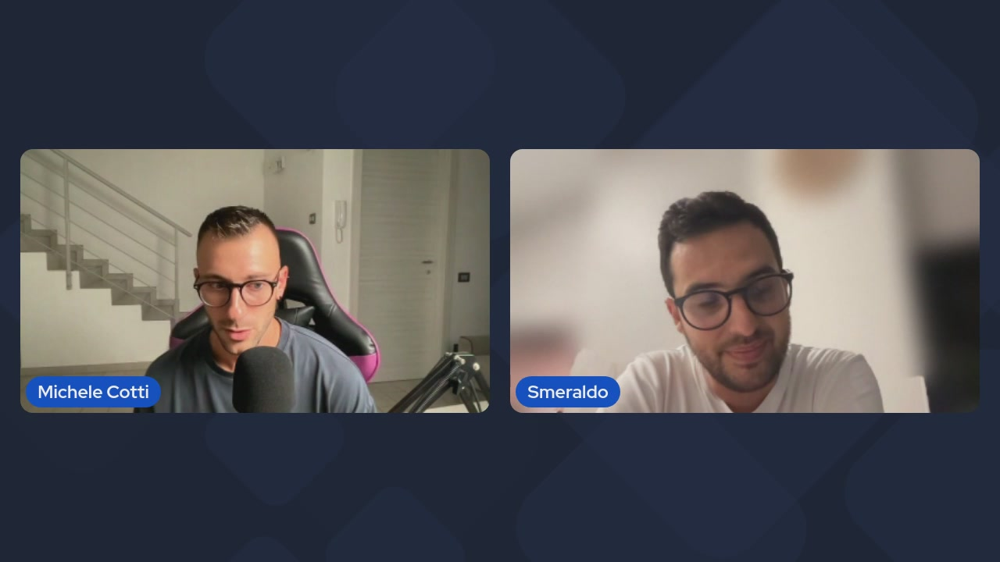
Lato AI, magari da solo? Io sono una persona molto curiosa, quindi sì, mi sono messo lì pensando anche di riuscire a fare le cose da solo, effettivamente. Perché sai, se c'è l'AI, allora io posso chiedere all'AI. La verità è che le cose sono più complesse di quello che sembrano, ma poi c'è proprio un tema di se non hai un percorso chiaro di cosa devi fare, comunque ti perdi. E poi c'è il cliente, la chiamata, l'investitore. Per il viaggio, se non hai un percorso, se non hai un supporto, è difficile arrivare a un punto di questo tipo da soli, quindi personalmente sì, sono molto contento di andare a coinvolgere persone che poi effettivamente ti creano un shortcut per arrivare al dunque. Ottimo. E allora a questo punto, dato che poi noi abbiamo fatto un percorso insieme di costruzioni di quello che è stato il tuo brain, ad oggi quali sono le task che in realtà ti va a prendere il brain? Qual è il valore aggiunto che ti dà di quello che poi abbiamo costruito insieme? Allora io devo essere sincero, sono sconcertato di quello che oggi è possibile
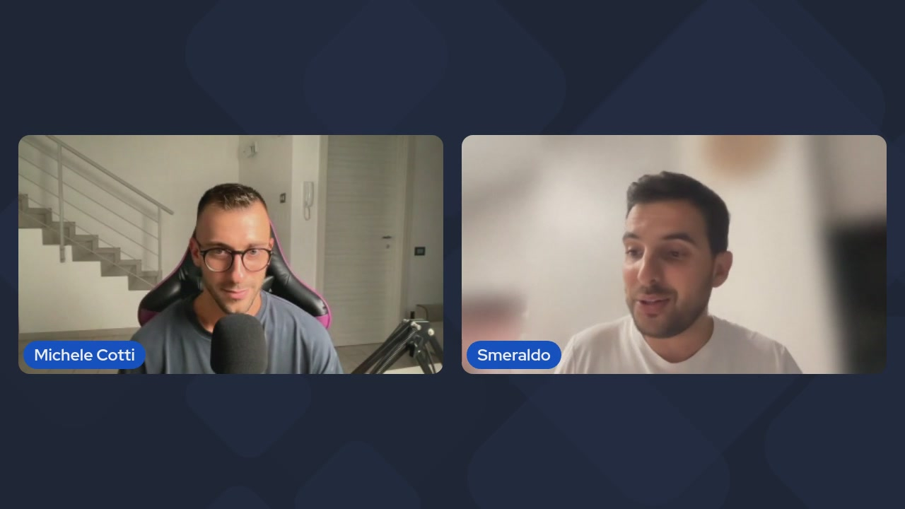
fare. Poi tu l'hai spiegato molto bene, devo dire, quindi per me oggi è meno sorpresa magari rispetto ad altre persone, ma la verità è che il tempo che ci metti a fare tutto quello che facevi prima può essere ridotto del 90%, ma non sto scherzando. Quindi qualsiasi cosa che facevi, cioè a partire dal preventivo che potrebbe essere il draft delle email. Ti faccio un esempio concreto, due diligence per una raccolta piccolina da 250.000 Euro, comunque dovevo metterci l'impegno, sistemare i business plan, sistemare il pitch deck che non toccavo da un sacco di tempo, sistemare un po' di documenti strategici e tutto. Ho fatto il lavoro in probabilmente 20 minuti, un lavoro che ci vogliono settimane di solito, non ho avuto neanche il tempo di riguardarlo. Ho dovuto chiedere all'AI di darmi delle nozioni per poter capire in fretta quello che è stato fatto e gli investitori hanno deciso di investire. Insomma, questo è un esempio
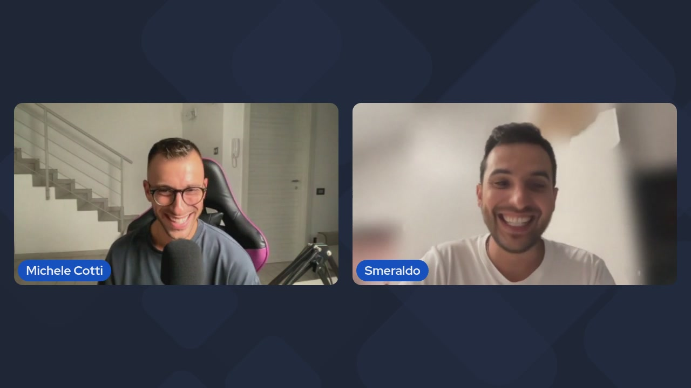
lampante, ma la cosa più bella tutti i giorni è quello che mi risparmia di tempo tutti i giorni, ma non solo di tempo ma anche di precisione. Se prendi tutte le nostre tabelle di pricing e tutto quello che mi dicono i clienti, io parlo un sacco, lo sai questo, e quindi faccio anche delle promesse e poi dopo ricordarmi, anche andare a prendere le note per farmi la presentazione per mandare il preventivo. Noi mandiamo delle presentazioni, come qualcuno fa, perché è un servizio enterprise, quindi ci vuole dello sforzo e adesso lo faccio così. In realtà è praticamente pronto subito dopo, ci do un'occhiata al volo, un'occhiata per la prospettura, e questa roba cambia tantissimo. Poi adesso devo imparare a godermi il tempo libero, perché se ho più tempo libero prendo più call con i clienti in realtà, quindi lavoro di più, poi fattore anche di più. Bene, grazie per aver condiviso poi tutto quello che abbiamo fatto e di base quello che poi ti ha
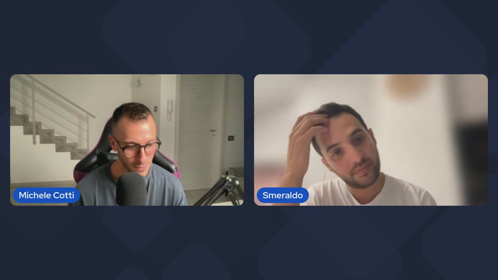
rimosso, tutte le cose che hai raccontato. Giusto un'ultima domanda prima di lasciarti scappare, anche perché sarei qua ore con te a parlare, lo sai, però abbiamo tempi stretti e c'è ancora un bel po' di roba da far vedere. Cosa diresti ad oggi a chi magari non ha un company brain ed è lì che dice ma dovrei farlo, non dovrei farlo, perché magari ci sono tante persone che hanno visto questa serie un po' di roba, sono ancora magari lì che dicono ok ma sta roba funziona, non funziona. Certo, guarda ti dirò una cosa forse un po' contributiva, perché tutti vogliono fare le cose per fatturare di più giustamente e questo sicuramente ti permette di ottimizzare il tuo tempo, fatturare di più, è ovvio, è scontato, cioè si capisce rapidamente questa cosa, ma il motivo per cui bisogna farlo secondo me è perché cioè da imprenditore tutti noi abbiamo preso un rischio all'inizio facendo qualcosa di particolarmente innovativo che però si è dato un vantaggio competitivo estremo rendendoci persone di successo oggi, cioè un tempo noi abbiamo fatto questa
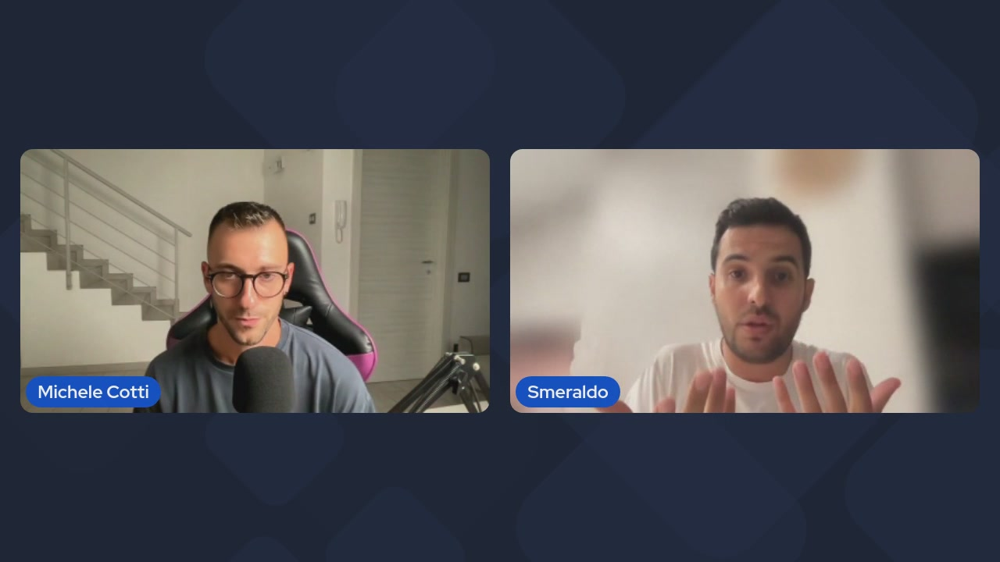
scelta rischiosa al tempo che però effettivamente ha dato i suoi frutti. Da imprenditore tu ti godi questi frutti, continui nella tua impresa fino a un certo punto in cui non c'è un altro disruption, c'è stata la rivoluzione industriale, ci sono stati i fogli excel, ci sono stati i disegni in 3D di chi faceva l'architettura e adesso c'è questa roba qua, cioè la verità è che oggi forse lo fai ancora e hai un vantaggio competitivo estremo, diciamo, il problema è che se non lo fai oggi lo fai domani, sei già rincorrendo perché gli altri lo fanno, cioè è molto semplice, non lo fai tu, lo fanno i tuoi competitori e diventa più bravi loro, quindi io non lo vedo come un, oh devo farlo così miglioro il mio business, io lo vedo come il percorso, cioè questo è il presente e il futuro, di fare impresa ma di lavorare in generale, cioè oggi come sto lavorando oggi non tornerei mai più indietro, ma proprio manco mi pagassero, preferisco di no. Sono completamente d'accordo con te, è una rivoluzione alla fine, è il futuro, che poi alla fine non è più neanche il futuro,
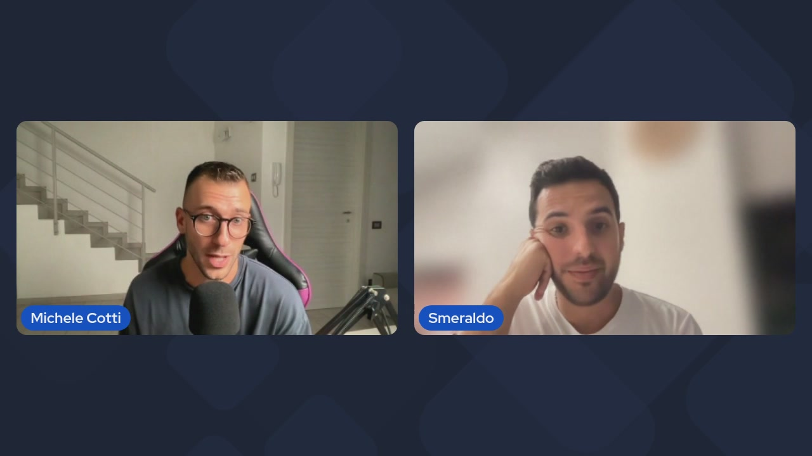
ma è il presente di base. No, no, è il presente, assolutamente, poi in Italia capisco che le cose stanno arrivando, insomma, step by step, per fortuna c'è gente come te che le porta perché non sarebbe veramente facile. Io ho molti amici comunque stati uniti, comunque Silicon Valley e tutto è ormai lo standard, no, e sta arrivando in tutti i settori, anche i dentisti per dirti, no, veramente tutti i settori, non solo tech, quindi bisogna, insomma, prendersi cura di questa direzione, insomma, prendere decisioni. Sono d'accordo, ti ringrazio Smeraldo, grazie per il tempo che ti sei riservato per venire qua in call con me. È stato un piacere, ci sentiamo presto. Grazie, un abbraccio. Bene ragazzi, volevo portarvi l'esperienza di Smeraldo
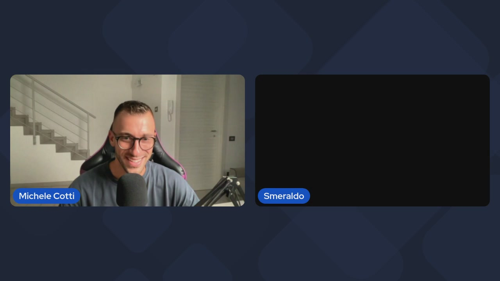
perché è qualcosa di incredibile, ok? Come ieri vi ho portato Cristia, che vi è raccontato la sua storia, volevo portarvi anche un'altra storia di un altro imprenditore con cui abbiamo fatto il percorso insieme. Capite quello che ha detto, si tratta di una rivoluzione, ok? Sono completamente d'accordo con le parole che ha detto. Ora, torniamo a noi, ok? Torniamo alla nostra presentazione.
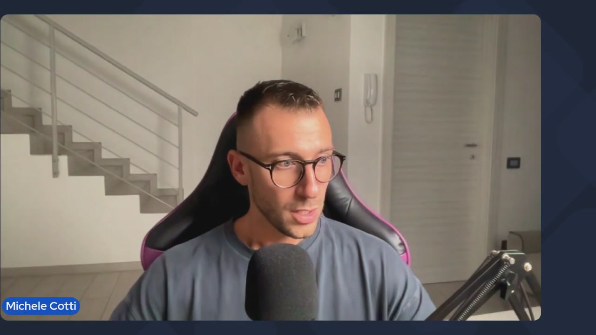
Ora, adesso fermiamoci un secondo, ok? Perché voglio dirvi una cosa che secondo me parecchi di voi sta già girando in testa. In queste sere il Company Brain voi l'avete visto, ok? Non raccontato, l'avete visto dal vivo con i dati veri. L'avete visto lavorare e parecchi di voi arrivati a stasera una cosa l'hanno capita. Questa cosa nella mia azienda servirebbe. Da domani mattina servirebbe sta cosa. Però, nell'altra metà della testa c'è un pensiero ed è sempre lo stesso. Bello, ma io ho il tempo di mettermi lì e costruirmelo, però da zero io non ce l'ho il tempo. E qui voglio essere preciso perché questo è il punto che conta. Il vostro problema non è il tempo di costruirlo, ok? È il tempo di sbagliarlo. Da soli si va per tentativi, si parte pieni di entusiasmo, ci si blocca alle 11 di sera come vi dicevo ieri, si ricomincia da capo e dopo tre mesi si molla con una cartella piena di esperimenti. Quello è il tempo che non avete. Il tempo per
OCR: e dopo tre mesi si molla con una cartella piena di esperimenti.
farlo una volta sola, nell'ordine giusto, con qualcuno accanto nei punti dove ci si blocca, quello è un altro discorso, ok? Quello è un altro discorso, l'avete sentito da Smeraldo. Ed è esattamente per questo che abbiamo costruito un percorso. Per farlo insieme sulla vostra azienda, con i vostri dati e il vostro settore. Senza che dobbiate impazzirci da soli. Allora adesso voglio chiedervelo, vi va se nei prossimi dieci minuti ve lo presento? Apriamo un attimo la chat e voglio che mi diciate di sì, voglio che mi lasciate presentarvi questo programma, con cosa c'è dentro, quanto dura e che garanzie avete. Vi va se lo presento? Ottimo, ottimo, ottimo, ottimo, ottimo. Vi vedo tutti belli carichi, quindi perfetto, ottimo. Quindi iniziamo. Ve lo presento. Visto che siete ancora tutti qua, ve lo racconto più
OCR: Cosa c'è dentro, quanto dura, e che garanzie avete?
che volentieri. Quindi partiamo. E partiamo dall'unica cosa che voglio che sia chiara fin da subito. Trenta posti, ok? I posti sono trenta, non uno di più. E vi dico anche perché, perché non è un numero buttato lì per farvi fretta, ok? Il cuore di questo percorso sono due giornate in cui il cervello lo costruiamo dal vivo insieme. Con voi che mettete le mani sulla vostra azienda, mentre io e il mio team vi seguiamo passo passo. E più di trenta persone non riesco a seguirle davvero, una per una, come voglio fare io, ok? Se ne prendo cento, divento uno di quelli che vi vende il videocorsettino e poi sparisce. E vi dico di più, questi trenta non li seguiamo nemmeno tutti insieme. Li dividiamo in due classi da quindici e ogni classe fa le sue due giornate dal vivo, complete, con me e il mio team, uguali per tutti, ok? Perché trenta in una stanza sola è già un'aula. Quindici persone invece è un bel tavolo
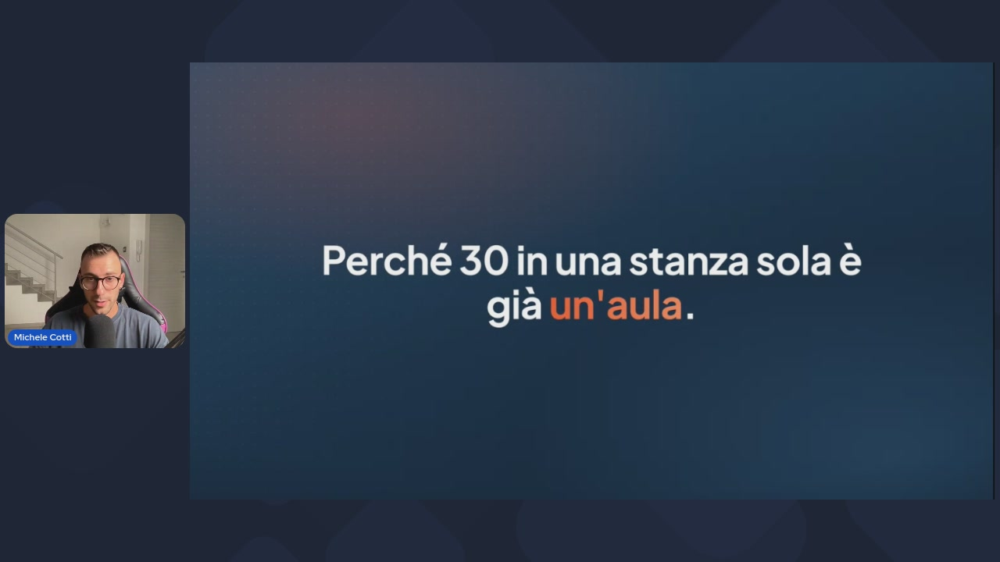
OCR: Perché 30 in una stanza sola è già un'aula.
di lavoro e si riesce a lavorare molto bene. Quindi trenta in due classi seguiti al massimo, seguiti bene, ok? E basta, non uno in più. Adesso vi spiego cosa vi portate a casa di preciso. E non vi butto lì tutto in una volta come la lista della spesa, ok? Perché ogni pezzo di questo percorso è lì per un motivo suo. E voglio che capiate il valore di ognuna delle cose, una alla volta. Il percorso poggia su tre pilastri principali. Il primo è dove il cervello si va a costruire. Il secondo è dove non vi lasciamo da soli mentre lo fate. E il terzo è quello che vi resta in mano per sempre. Andiamo con ordine, con calma. Primo pilastro, le due giornate di costruzione dal vivo. Questo è il cuore su cui si fonda tutto. Due giornate intere, in diretta, con me e il mio team, in classi piccoli, come vi dicevo, da quindici persone, in cui il vostro company brain lo montiamo insieme, da zero. E qui c'è la differenza che conta. Quindi ascoltatela
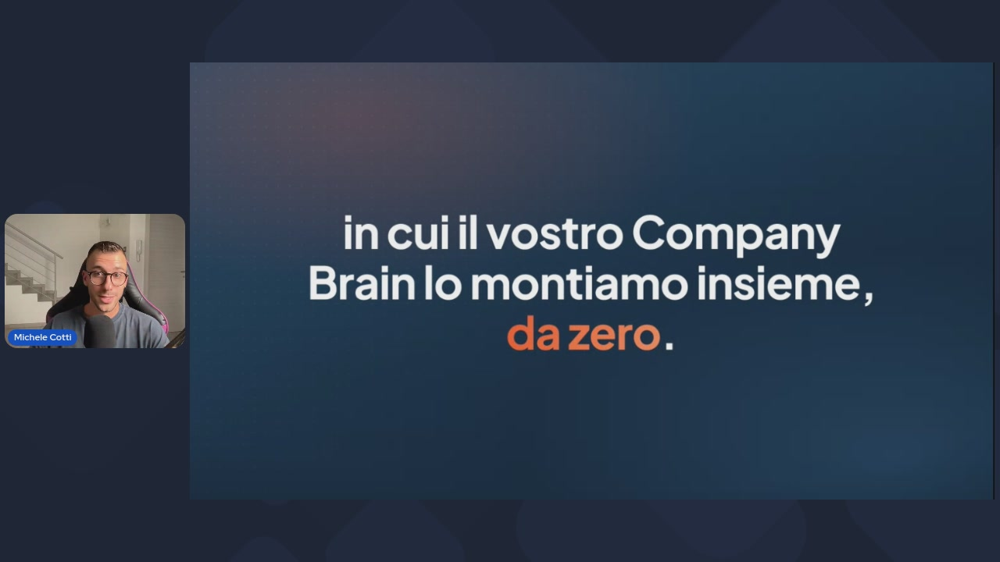
OCR: in cui il vostro Company è Brain lo montiamo insieme, da zero.
molto bene. Non ve lo costruisco io per consegnarvelo chiavi in mano, ok? Quello non vi servirebbe a niente, perché il mese dopo cambia qualcosa nella vostra azienda e voi siete di nuovo fermi, senza sapere dove mettere le mani. Lo costruite voi con le vostre mani, ma guidati passo passo. Così imparate a costruirlo e a tenerlo in piedi. E questa è la cosa fondamentale. E soprattutto inserirete i vostri dati in modo da renderlo cucito su misura sui processi della vostra azienda. Un prodotto copia e incolla, che creo io, non sarebbe custom, non sarebbe personalizzato sulla vostra azienda e non funzionerebbe bene come una cosa seguita e fatta assieme. Uscite da quelle due giornate col cervello già acceso e funzionante, costruito sui vostri processi. Non con una cartella di appunti da guardare sul quando avrò tempo, ok? Quindi, ricapitolando, due giornate di costruzione dal vivo, insieme a me e al mio team, del vostro company brain, quanto valgono? Valgono almeno 5.000 Euro, ok? Valgono almeno 5.000 Euro. Passiamo
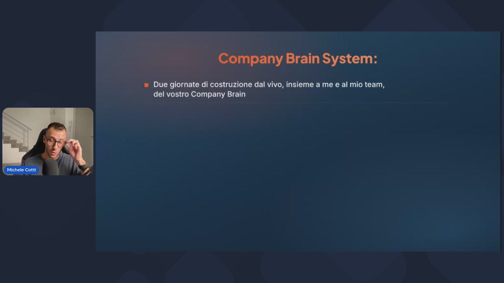
OCR: Company Brain System: ® Due giornate di costruzione dal vivo, insieme a me e al mio team, del vostro Company Brain
poi al secondo pilastro. 60 Giorni in cui non siete soli, ok? E qui c'è il vero valore, quello che nessun altro vi dà là fuori. Perché è esattamente il punto in cui tutti gli altri vi mollano. Finite le due giornate e comincia il bello, ok? Due mesi interi in cui vi accompagniamo mentre lo portate dentro l'azienda, pezzo per pezzo nel lavoro di tutti i giorni. E dentro questi due mesi ci sono quattro cose, ok? Ve le dico una per una perché ognuna vi copre le spalle in un momento diverso, ovviamente. La prima sono le call di gruppo. Andremo a fare ogni settimana, ci vediamo con cadenza fissa ogni settimana, si lavora insieme e si sciolgono i dubbi in diretta. E vedete anche agli altri a che punto sono, ok? Cosa che vi rimette incarreggiate nelle settimane in cui da soli avreste lasciato perdere. Seconda cosa è una community privata di soli imprenditori, quindi tutti dentro la costruzione nello stesso momento, dentro la stessa costruzione, ok? Perché farlo
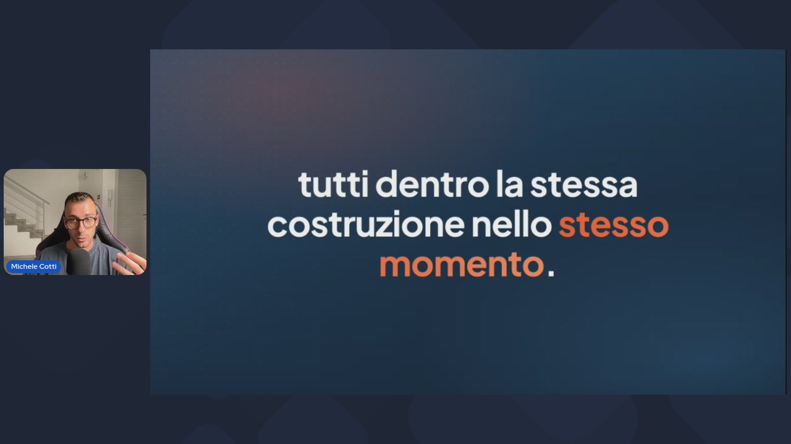
OCR: tutti dentro la stessa o costruzione nello stesso momento.
da soli è un conto. Farlo dentro un gruppo di persone come voi che si spronano e si aiutano a vicenda è un altro paio di manica. E poi c'è la terza. La terza sono due consulenze uno a uno, solo voi e un coach dedicato a porte chiuse sulla vostra azienda specifica, con i vostri numeri e i vostri casi. Perché certe cose non si dicono davanti a tutti, ok? E lo capisco. E certe soluzioni vanno cucite solo su di voi. E poi c'è la quarta. E per me è quella che fa la differenza tra chi arriva fino in fondo e chi no. È il supporto in chat col coach. Ve lo ricordate la scena, quella di cui parlavamo ieri sera? Erano le 11 di sera, dopo una giornata piena, il pezzo che non torna, il muro che hai davanti, è lì che la gente molla. E non perché non è capace, ok? Ma perché in quel momento è sola. Ecco, in quel momento voi scrivete e dall'altra parte non c'è un robot, ok? C'è una persona vera che c'è già passata e che vi dice tranquillo,
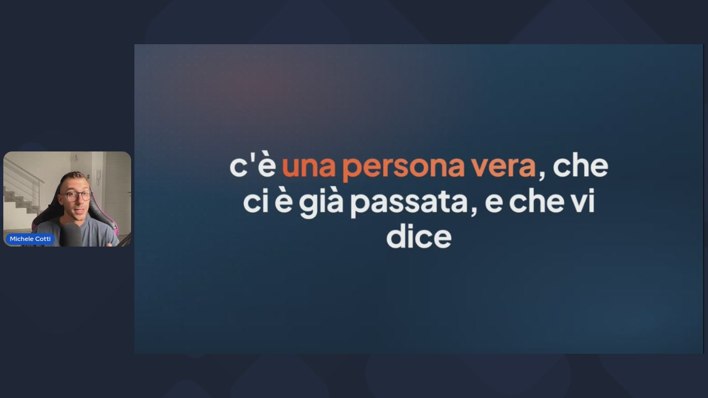
OCR: c'è una persona vera, che i ci è gia passata, e che vi me dice
è normale, si fa così, vai avanti, ok? Quella frase, al momento giusto, è tutta la differenza tra chi il cervello se lo porta a casa e chi tra sei mesi è ancora fermo. Quindi, ricapitolando, 60 giorni di affiancamento con call di gruppo ogni settimana, coaching uno a uno su di voi, private, community di imprenditori che stanno facendo la stessa cosa, supporto chat con il coach sempre disponibile, anche questo ha un valore di almeno 4.500 Euro. E siamo ad un valore complessivo di 9.500 Euro. E poi ci sono le cose che vi tenete a prescindere da tutto, per sempre. Il terzo pilastro, gli strumenti che vi restano in mano. La dashboard, il quartier generale che io vi ho fatto vedere, con i vostri dati dentro, ok? Quella che abbiamo visto in queste tre serate, lavorare, fare cose, ok? Quella è vostra, installata sulla vostra azienda e nessuno ve
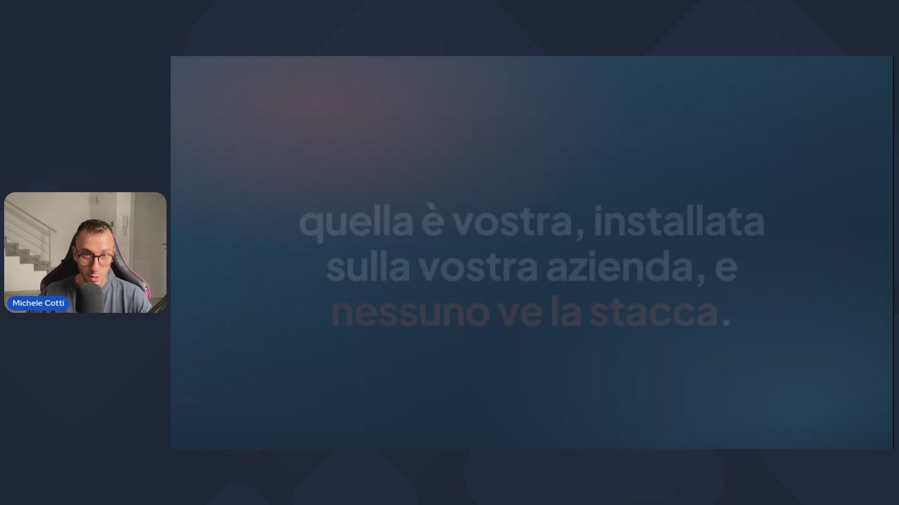
la può staccare. La dashboard, quindi il quartier generale personalizzato che poi avrete a vita, vale almeno 2.000 Euro, ok? Almeno 2.000 Euro. E siamo ad un valore complessivo di 11.500 Euro. Ma c'è di più. Il corso completo Cloud Mastery. Sono 11 moduli, 15 ore di lezioni pratiche e sarà vostro a vita. E qua davvero ci ho messo tutto me stesso e adesso vi dico esattamente cosa c'è dentro nel corso Cloud Mastery. C'è il primo modulo dove si va e si fa la mappa e il setup, quindi l'ecosistema di Cloud, scegliere il piano giusto, l'installazione, cose che magari tanti di voi hanno già fatto, ma per chi parte da zero, cose fondamentali. Poi abbiamo le fondamenta, quindi un minimo di teoria su come ragionano gli AI, le allucinazioni, perché il contesto è meglio del prompt. Tutto il vocabolario, lato AI, perché se è un mondo nuovo bisogna capire cosa si sta guardando. Poi passiamo ad una rapida panoramica di Cloud in chat, quindi per capire quando ci
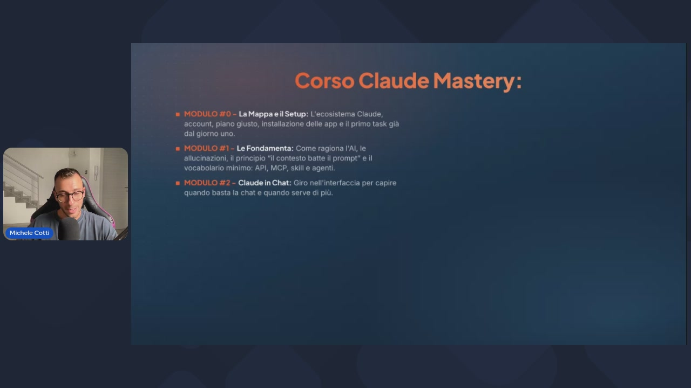
OCR: Corso Claude Mastery: = MODULO #0 - La Mappa eil Setup: L'ecosistema Claude, account, piano giusto, installazione delle app e il primo task già dal giorno uno. = MODULO #1- Le Fondamenta: Come ragiona l'Al, le allucinazioni, il principio “il contesto batte il prompt" e il vocabolario minimo: API, MCP, skill e agenti. = MODULO #2 - Claudein Chat: Giro nell'interfaccia per capire ‘quando basta la chat e quando serve di più.
basta utilizzare la chat e quando invece non ci serve più. Vedremo che la chat ci servirà ben poco con tutto quello che andremo a fare. E poi abbiamo il modulo 3, co-work, quindi entreremo nel tuo workspace, quindi Cloud che lavora sulla tua azienda, sui file, sul contesto, la memoria, i connettori, il brief del mattino. Poi avremo il modulo 4 che andremo a vedere le connessioni, gli MCP, quelli che avete visto anche attaccati al mio brain, colleghi Cloud al tuo gestionale, alla tua email, a tutti gli strumenti che utilizzi in azienda. E se non ci sono, ne costruisci uno tuo. Ti fornisco il materiale per poter costruire un MCP che ci attacchi allo strumento anche se non ce l'ha. Poi passiamo al modulo 5, modulo le skill. Un modulo ricco in cui si va a fare i processi, le offerte, i preventivi, la skill humanizer, l'organizzazione della giornata. Vi regalo anche io delle skill già create da me. Ma si va a costruire ogni skill per ogni vostro processo, ciò che avete visto da me stasera. Quindi la parte, ad esempio, del preventivo che si genera, la parte del contratto che si genera. Quelle sono tutte cose che andremo
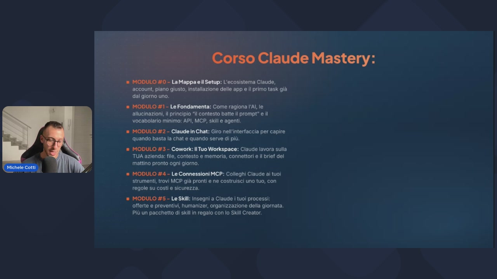
OCR: Corso Claude Mastery: ® MODULO #0 - La Mappa eil Setup: L'ecosistema Claude, account, piano giusto, installazione delle app e il primo task già dal giorno uno. = MODULO #1- Le Fondamenta: Come ragiona l'Al, le allucinazioni, il principio “il contesto batte il prompt" e Il Vocabolario minimo: API, MCP, skill e agenti. ‘= MODULO #2 - Claudein Chat: Giro nell'interfaccia per capire ‘quando basta la chat e quando serve di più. = MODULO #3 - Cowork: ll Tuo Workspace: Claude lavora sulla TUA azienda: file, contesto e memoria, connettori e il brief del mattino pronto ogni giorno. = MODULO #4 - Le Connessioni MCP: Colleghi Claude ai tuoî strumenti, trovi MCP già pronti e ne costruisci uno tuo, con regole su costi e sicurezza. m MODULO #5 - Le Skill: insegni a Claude i tuoi processi: offerte e preventivi, humanizer, organizzazione della giornata. Più un pacchetto di skill in regalo con lo Skill Creator.
a trattare anche all'interno di Cloud Mastery, all'interno della parte delle skill. E poi si passa a Cloud Code, perché se fino qua eravamo in Cloud Cowork, andiamo a vedere Cloud Code, lo strumento che magari tanti di voi non hanno ancora utilizzato. E' lo strumento più potente. Andremo a vedere l'installazione, come si utilizza, il controllo dei permessi, l'avviare da telefono anche quando magari siamo fuori casa. Si va a vedere il quartiere generale di Cloud Code, quindi la cartella, il Cloud MD, la memoria, tutta una lezione sulla token economy, quindi su come risparmiare token, su come si ottimizza, si fa lavorare bene l'AI. E poi si passa alla parte di agenti. Quindi una famiglia di agenti che lavora per te in parallelo. Si capisce quando utilizzare uno, quando utilizzare l'altro, quando si può utilizzare la squadra, quando l'ultracode. Tutte le cose che chiaramente si utilizzano all'interno. Agenti che si utilizzano in Cloud Code. E non serve essere il programmatore, ok? Tutto spiegato passo passo per una persona normalissima, ok? Da una persona normalissima.
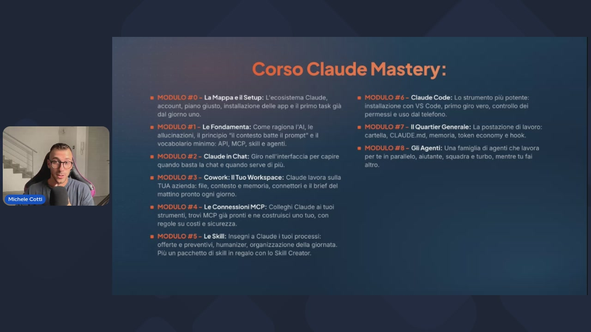
OCR: ? Corso Claude Mastery: = MODULO #0 - La Mappa eil Setup: L'ecosistema Claude, account, piano giusto, installazione delle app e il primo task già dal giorno uno. ‘@ MODULO #1 - Le Fondamenta: Come ragiona l'Al, le allucinazioni, il principio “il contesto batte il prompt" e il vocabolario minimo: API, MCP, skill e agenti. ‘= MODULO #2 - Claude in Chat: Giro nell'interfaccia per capire ‘quando basta la chat e quando serve di più. = MODULO #3 - Cowork: ll Tuo Workspace: Claude lavora sulla TUA azienda: file, contesto e memoria, connettori e il brief del mattino pronto ogni giorno. = MODULO #4 - Le Connessioni MCP: Colleghi Claude ai tuoì strumenti, trovi MCP già pronti e ne costruisci uno tuo, con regole su costi e sicurezza. ® MODULO #5 - Le Skill: Insegni a Claude i tuoi processi: offerte e preventivi, humanizer, organizzazione della giornata. Più un pacchetto di skill in regalo con lo Skili Creator. = MODULO #6 - Claude Code: Lo strumento più potente: installazione con VS Code, primo giro vero, controllo dei permessi e uso dal telefono. = MODULO #7 - Il Quartier Generale: La postazione di lavoro: cartella, CLAUDE.md, memoria, token economy e hook. = MODULO #8 - Gli Agenti: Una famiglia di agenti che lavora per te in parallelo, aiutante, squadra e turbo, mentre tu fai altro.
Poi si passa al modulo 9, le automazioni. Quindi tu trasformi un processo ripetitivo in un'automazione che gira da solo, con il metodo Orbit, che tanti di voi nel VIP hanno già visto qua. Andiamo ad approfondirlo ancora di più. Lo colleghiamo a tutto quello che sono le skill. E poi arriviamo al modulo che a me piace di più in assoluto, che è il modulo 10, che è il gran finale, con 11 lezioni ultraricche in cui andiamo a creare un'applicazione, ok? E la mandiamo online completamente da zero. Sarà un'applicazione multiutente, ok? Quindi con un accesso da admin e un accesso da utente live dove ognuno ha i propri permessi, ognuno vede le proprie cose. Vi farò vedere dal database alla creazione dell'app, al front end, al back end, a renderla sicura, a creare la parte di login. Tutto dalla A alla Z, da come si parte da zero a come si costruisce un'app pronta e funzionante. Con questo cosa ci potete fare? Ci potete creare tool interni per la vostra azienda. E la cosa bella è che poi da quell'app si può creare un MCP che è di base il connettore
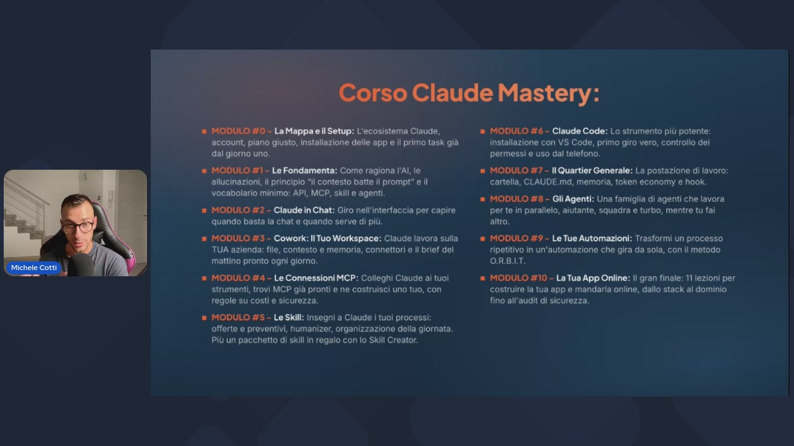
OCR: Pari » MODULO #0 - La Mappa eil Setup: L'ecosistema Claude, ‘account, piano giusto, installazione delle app e il primo task già dal giorno uno. = MODULO #1 - Le Fondamenta: Come ragiona l'Al, le allucinazioni, il principio “il contesto batte il prompt" e il vocabolario minimo: API, MCP, skill e agenti. = MODULO #2 - Claude in Chat: Giro nell'interfaccia per capire ‘quando basta la chat e quando serve di più. ® MODULO #3 - Cowork: Il Tuo Workspace: Claude lavora sulla TUA azienda: file, contesto e memoria, connettori e il brief del mattino pronto ogni giorno. = MODULO #4 - Le Connessioni MCP: Colleghi Claude ai tuoî strumenti, trovi MCP già pronti e ne costruisci uno tuo, con regole su costi e sicurezza. ‘= MODULO #5 - LeSkiI: Insegni a Claude i tuoi processi: offerte e preventivi, humanizer, organizzazione della giornata. Più un pacchetto di ski in regalo con lo Skili Creator. Corso Claude Mastery: = MODULO #6 - Claude Code: Lo strumento più potente: installazione con VS Code, primo giro vero, controllo dei permessi e uso dal telefono. = MODULO #7 - Il Quartier Generale: La postazione di lavoro: cartella, CLAUDE.md, memoria, token economy e hook. = MODULO #8 - Gli Agenti: Una famiglia di agenti che lavora per te in parallelo, aiutante, squadra e turbo, mentre tu fai altro. ® MODULO #9 - Le Tue Automazioni: Trasformi un processo ripetitivo in un'automazione che gira da sola, con il metodo ORBIT. = MODULO #10 - La Tua App Online: Il gran finale: 11 lezioni per costruire la tua app e mandarla online, dallo stack al dominio fino all'audit di sicurezza.
e può attaccare il nostro company brain. Permette di creare tool interni, creare app che potete vendere ad aziende, creare software, ok? Potete davvero andare a fare di tutto. Quello è il modulo che io preferisco e secondo me è davvero una bomba. E credetemi che in questo corso ci ho messo tutto me stesso. Ci sono tutti gli errori che ho fatto negli anni e tutte le cose che ho preso negli anni. È qualcosa di incredibile. Sono 15 ore di materiale di valore pratico, ok? Pratico in cui ci si mette lì e quant'altro, ok? Non scade e nessuno ve lo toglie più. E vi dirò di più. Ovviamente siamo in un mondo in cui evolve e quindi ci saranno aggiornamenti, cose nuove. Ovviamente ogni singolo aggiornamento io andrò e lo inserirò all'interno del corso di Cloud Mastery e voi ce l'avrete a vita, ok? Quanto può valere il corso di Cloud Mastery così? L'ho prezzato 2.500 Euro, ma è il minimo. Avrei potuto prezzarlo molto di più per il valore che dà, ok? Per il valore che dà e quello che vi insegna a fare. Valore complessivo fino a questo momento siamo a 14.000 Euro.
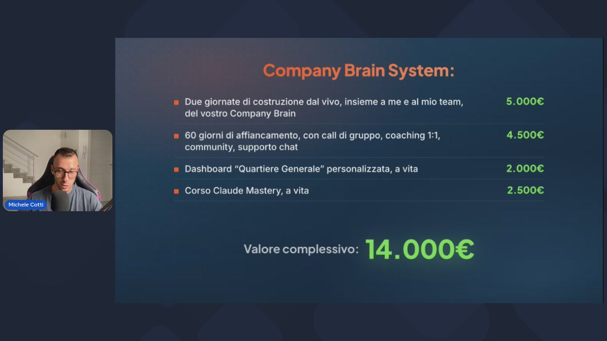
OCR: Company Brain System: » Due giornate di costruzione dal vivo, insieme a me e al mio team, del vostro Company Brain ® 60 giorni di affiancamento, con call di gruppo, coaching 1:1, ‘community, supporto chat = Dashboard “Quartiere Generale" personalizzata, a vita = Corso Claude Mastery, a vita Valore complessivo: 14 n 000€ 5.000€ 4.500€ 2.000€ 2.500€
Questi sono i tre pilastri, ok? Le due giornate per costruirlo, i 60 giorni per non mollarlo a metà e gli strumenti che restano vostri per sempre. E quello che li tiene insieme è una cosa sola, la stessa da tre sere. Qui non guardate dei video da soli sperando di applicarli, ok? Qui il vostro cervello lo costruite davvero, guidati fino a che sta in piedi da solo e questo è l'importante. Ora, di cos'è che potreste ancora aver bisogno oltre a tutta quella roba qua? Avete le live per la costruzione del company brain? Avete le coaching di gruppo settimanali? La community con tutti gli imprenditori? Le coaching uno a uno personalizzate, private, su di voi? Il supporto del coach in chat privata? Vi manca solo qualcuno che risponda anche quando tutti gli altri dormono, ok? E per questo abbiamo costruito Oracle AI. Cos'è Oracle AI? È un assistente addestrato sulle 15 ore di corso e su tutti i miei video YouTube. Ve lo presento. È questo, ok? Ha dentro tutta
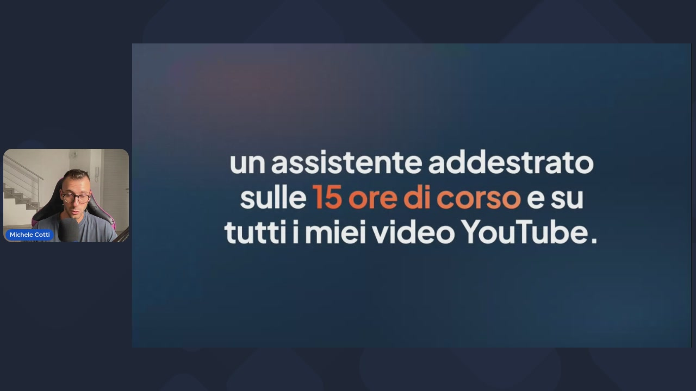
OCR: un assistente addestrato sulle 15 ore di corso e su tutti imiei video YouTube.
la knowledge base di tutto il corso di Cloud Mastery su tutti i miei video YouTube. È la vostra prima linea, ok? Per i prossimi 60 giorni gli iscrivete a qualsiasi ora, ok, di sabato pomeriggio, di domenica, di notte o tra una cola e l'altra, ok? Quando volete e vi risponde subito sulla vostra situazione, puntandovi anche alla lezione esatta che vi serve. Quindi vi dà la risposta, vi dice se volete approfondirla, la trovate qua. Poi vi cliccate e siete dentro nella lezione che ne parla. Il valore di Oracle AI? Sinceramente qua se sono onesto con voi, non lo so. Anche perché è una cosa che non la vende nessuno, ok? L'abbiamo costruito noi per questo percorso sul nostro materiale. E un prezzo di listino da andare a guardare non esiste effettivamente, ok? Però quanto può valere Oracle AI, il vostro assistente, lo possiamo prezzare almeno ad un valore di 1000 euro, ok? E quindi siamo giunti ad un valore complessivo di 15.000 Euro. Tutta quella roba qua. E non è un numero
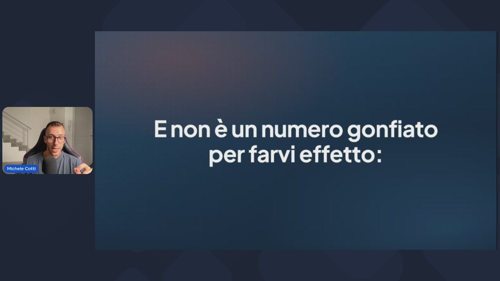
OCR: É E non è un numero gonfiato Mr.” per farvi effetto:
gonfiato, ok? Per farvi effetto. Quindi abbiamo dentro tanta roba. Due giornate di costruzione dal vivo, insieme a me e al mio team, 60 giorni di affiancamento, call di gruppo settimanali, coaching uno a uno, community supporto chat, dashboard, ok? Corso Cloud Mastery, Oracle AI, c'è dentro davvero una marea di roba. E non è un numero gonfiato, come dicevo, per farvi effetto. È quello che pezzo per pezzo questa roba vale davvero sul mercato. E allora a 15.000 Euro io questo percorso dovrei vendervelo, ok? Questo è il prezzo giusto. Sarebbe onesto? Ci starebbe tutto. Ma non è quello che faccio, ok? E adesso vi dico apertamente il perché. I motivi sono principalmente due. Il primo, in questa fase per noi c'è una cosa che conta più dei soldi. Che voi ci riusciate davvero. Che usciate da qui con un'azienda che ha il suo cervello e che gira per davvero, ok? E che poi lo possiate raccontare in giro, perché noi ci stiamo costruendo una reputazione su questo mercato. E quella è la cosa che ci interessa di più in questo momento. E la reputazione non è
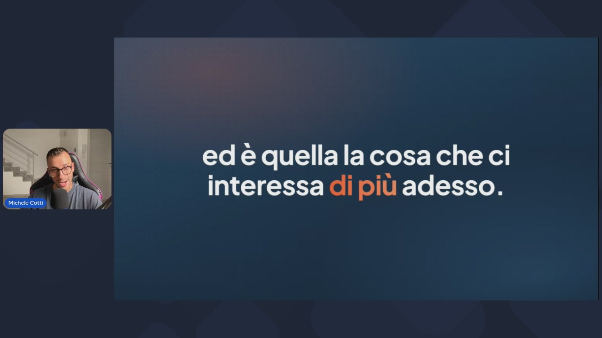
OCR: £ edè quella la cosa che ci interessa di più adesso.
che te la puoi comprare con una pubblicità, ok? Te la danno le aziende vere che ottengono risultati veri. E che lo dicono agli altri, come sono Cristian, come Esmeraldo, ok? Ecco perché il vostro successo in questo momento per noi vale più del margine che potremmo farci sopra. Molto di più, credetemi. E poi c'è il secondo motivo, ed è ancora più concreto. Questa è la prima edizione di questo percorso in questo formato. Fino ad oggi questo lavoro l'abbiamo fatto uno a uno, imprenditore per imprenditore. E i risultati li avete visti stasera e ieri sera, ok? Dalle persone che sono state in live con me. Adesso, per la prima volta, apriamo le porte ad un gruppo, ok? E chi entra adesso in questa prima edizione ci aiuta a costruire i prossimi casi studio. Quelli che racconteremo a chi arriverà dopo di voi. È uno scambio e ve lo dico per così com'è, ok? Voi entrate ad un prezzo che non esisterà più. Noi costruiamo con voi le storie che venderanno le edizioni successive, perché chi verrà dopo questa cifra non la vedrà, ok? E ve lo dico oggi, davanti a tutti
OCR: Perché chi verrà dopo, questa cifra nonla vedrà.
voi, siamo in più di 400, così tra qualche mese potrete verificarlo voi stessi, ok? Ed è per questo che quel percorso dà 15 mila euro, ok? Non ve lo faccio pagare 15 mila euro e non ve lo faccio pagare nemmeno la metà, ok? Nemmeno 7500 euro. Il prezzo per chi entra in questa prima edizione è, adesso bevo, non è nemmeno la metà, ok? È di soli 4700 euro. Ricapitolando, due giornate di costruzione dal vivo insieme a me e al mio team del vostro company Brain, 60 giorni di affiancamento con call di gruppo, coaching uno a uno, community, supporto chat, dashboard del quartiere generale personalizzata a vita su di voi, corso Cloud Mastery a vita con tutti gli aggiornamenti, Oracle AI, il vostro assistente,
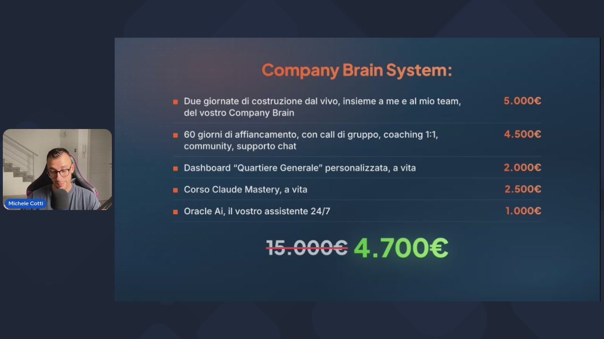
OCR: Company Brain System: Due giornate di costruzione dal vivo, insieme a me e al mio team, del vostro Company Brain 60 giorni di affiancamento, con call di gruppo, coaching 1:1, ‘community, supporto chat Dashboard “Quartiere Generale” personalizzata, a vita Corso Claude Mastery, a vita Oracle Ai, il vostro assistente 24/7 15.000€ 4.700€ 5.000€ 4.500€ 2.000€ 2.500€ 1.000€
trainato su tutto il nostro corso e tutti i nostri contenuti. Tutta sta roba da 15 mila euro di valore, ve la diamo a soli 4700 euro, ok? Bene, adesso avete visto cosa potete ottenere e cosa può cambiare dentro la vostra azienda. Avete visto il valore di questo percorso e il prezzo reale a cui ve lo stiamo offrendo. Quindi, se lo volete, ecco cosa potete fare. Questo è un QR code, serve per lasciare un acconto di 500 euro e bloccare subito il tuo posto, ok? Inquadrate il QR e potete bloccarvi il posto con un acconto di 500 euro. Come ripeto, sono 30 posti, ok? Adesso vi metto direttamente anche il QR qua sotto e vi spiego perché l'abbiamo messo, ok? Lo trovate
OCR: E vi spiego perché l'abbiamo messo. Riserva il tuo posto ora lasciando l'acconto di 500€, rimborsabile
comunque qua sotto, ok? Il QR per lasciare l'acconto. Vi spiego perché l'abbiamo messo. Perché i posti di questo percorso sono 30, sono limitati e ve l'ho detto prima, non uno in più, ok? E qui in live, stasera, siamo molto più di 30. Siamo centinaia, esattamente siamo 402 persone, ok? Siamo 402 persone. Per questo motivo stiamo dando la possibilità a chi è convinto di accapararsi subito il proprio posto, senza aspettare, ok? E quei 500 euro sono completamente rimborsabili. E anche qui vi spiego il perché, chiaramente. Sappiamo che è sera tardi, ok? Sappiamo che il tutor stasera non potrà gestire subito tutte le richieste che avremo, ok? E sappiamo che magari anche voi preferite fare le cose con più calma. Ma essendo i posti limitati, abbiamo deciso di darvi questa possibilità. L'acconto lo lasciate adesso e tutti i dettagli li finite domani, con calma, insieme al vostro tutor. Quindi, se volete intraprendere questo percorso e volete mettere questo cervello dentro la vostra azienda, potete già partire adesso. Lasciate l'acconto di
OCR: e volete mettere questo cervello dentro la vostra azienda. Riserva il tuo posto ora lasciando l'acconto di 500€, rimborsabile
500 euro completamente rimborsabile e vi siete assicurati il posto nel programma. Poi con calma, sentite il vostro tutor, vi accordate con lui e definite con lui tutti i dettagli, ok? Se invece, parlandoci, capite che non è il vostro momento, nessun problema, ok? Vi ridiamo i 500 euro e siamo a posto così, non c'è alcun problema. Quell'acconto serve solo ed esclusivamente una cosa, a prendervi il vostro posto adesso. Perché i posti, come ripeto, sono limitati. Se invece hai bisogno di più dettagli, scrivi direttamente al tuo tutor. Adesso, ok? Non domani. Scrivete al tutor, sono lì apposta. Vi conosce già, il numero ce l'hai già, scrivi, fagli tutte le domande che vuoi. Puoi avere il tutor o Nicolò o Mosè. Scrivi a uno dei due, chiaramente, al tuo tutor, ok? Ti saprà dare le risposte che cerchi e ti saprà dire se questa è una cosa che fa per te oppure no. Quindi, qualsiasi informazione ti serva, scrivi adesso al tuo tutor. Ma se sai già che questa è
OCR: Masse sai già che questa è una cosa che vuoi fare, quelQR code è li apposta. Riserva il tuo posto ora lasciando l'acconto di 500€, rimborsabile
una cosa che tu vuoi fare, quel QR code è lì apposta, ok? Te lo trovi qui in basso a sinistra sotto di me. Lo inquadri, scannerizzi, paghi l'acconto di 500 euro e sei dentro, ok? Ti sei assicurato il tuo posto. I posti sono limitati e chi prima arriva meglio loggia, ok? È una cosa scontata. E qui viene la parte che nessun altro vi dà. Il vostro company brain è garantito. Cosa che non vi ho ne ancora detto. È garantito sul risultato. Quindi non è la garanzia soddisfatti o rimborsati che è la frase che tutti dicono in giro perché fa bello, ok? Vi dico un'altra cosa. Se dopo le due giornate dal vivo, tutto il materiale e i 60 giorni di affiancamento con il coach, il vostro company brain non è attivo e funzionante, noi non è che vi mogliamo lì, ok? Continuiamo a seguirvi gratis finché non funziona. Avete capito cosa vuol dire quella cosa qua? Ragionateci un attimo. Capite cosa vuol dire questa cosa? Vuol dire che il rischio ce lo prendiamo noi, non voi. Perché io so che funziona, ok? L'ho fatto sulle mie aziende,
OCR: Perché io so che funziona, l'ho fatto sulle mie aziende Riserva il tuo posto ora lasciando l'acconto di 500€, rimborsabile
l'ho fatto fare a gente come Christian, che avete sentito ieri sera, o come Esmeraldo, che abbiamo sentito stasera, l'abbiamo sentito, è entrato in live con noi, ok? So che funziona questa cosa. E se sono così sicuro, è giusto che il rischio stia dalla mia parte, non dalla vostra. Voi rischiate di provarci, io rischio di dovervi seguire gratis se non funziona, ok? È il mio rischio. Avete visto il valore, avete visto il prezzo, ora voglio che vi soffermiate un attimo su quanto vi costa invece non averlo, ok? Perché questo prezzo lo state già pagando voi, adesso, ogni singolo mese. Solo che non ve ne accorgete, perché non lo vedete scritto da nessuna parte. Allora ve lo scrivo, con i vostri numeri, non con i miei. Prendete il foglio della diagnosi, quello della prima sera, quello con le vostre tre righe rosse, ok? Ve lo ricordate il numero che vi ho fatto segnare, le ore che vi mangia il lavoro ripetitivo ogni settimana? Quante erano? Ok? Mettiamo che siano dieci, per star bassi. Tanti di voi probabilmente ne hanno molte di più.
OCR: Mettiamo che siano 10. Riserva il tuo posto ora lasciando l'acconto di 500€, rimborsabile
Ma mettiamo che siano dieci, ok? Fate voi, ognuno con le sue, ok? Ognuno alle proprie ore. Adesso, una moltiplicazione alla volta, con calma. Quelle dieci ore per 48 settimane, che è un anno di lavoro tolte le ferie. Dieci per 48 fa 480, ok? Sono 480 ore. In un anno, buttate lì. Adesso, l'ultima moltiplicazione, quella scomoda. Quanto vale un'ora del vostro tempo? E non di un dipendente, la vostra, ok? Quella da imprenditore. Quanto vale un'ora? Rispondete dentro voi stessi. Mettetela pure bassa, mettetela a 50 euro, che è il minimo, ok? Che è il minimo. 50 Euro per un imprenditore non sono niente, è il minimo, ok? 480 Ore per 50 euro fa 24.000 Euro, ok? All'anno. 24.000 Euro all'anno. 2.000 Euro al mese. Ragionateci un attimo. 2.000 Euro al mese.
OCR: Riserva il tuo posto ora lasciando l'acconto di 500€, rimborsabile Son paio
Fermatevi un secondo su questo numero. 24.000 Euro. 24.000 Euro. Quello non è l'investimento del percorso, ok? Quello è quanto vi costa oggi non avere il cervello, ogni anno che passa. È un conto che pagate già adesso, solo che lo pagate in ore invece che in euro e sono stato basso. Di sera lo pagate, nei weekend, nelle cose che non fate con i vostri figli. Ve l'avevo promesso la prima sera che quel numero prima o poi l'avremmo messo in euro. Eccolo qua. E fa un altro effetto vederlo scritto, vero? È normale. E adesso rimettetelo accanto all'altro numero di stasera. L'investimento per il percorso è di soli 4.700 Euro, una sola volta. Non averlo ve ne costa 2.000 Al mese, ogni mese a tempo indeterminato. Fate voi i conti.
OCR: Non averlo ve ne costa 2.000al mese, ogni mese, a tempo indeterminato. Riserva il tuo posto ora lasciando l'acconto di 500€, rimborsabile
È come avere a libro paga un dipendente che non produce niente e che non potete licenziare. Quindi la domanda vera stasera non è, posso permettermi questo percorso? Ma la domanda vera è, posso permettermi un altro anno di quel conto lì? Fatevela. E quella risposta ce l'avete già, scritta sul vostro foglio, ok? Quindi, ricapitoliamo, perché vi ho detto tante cose e le voglio rimettere in fila tutte insieme. Company Brain System, solo 30 posti disponibili, cosa comprende? 20 Giornate di costruzione dal vivo del vostro Company Brain in due gruppi da 15 persone. 60 Giorni di affiancamento, call di gruppo ogni settimana, ok?
OCR: Company Brain System solo 30 posti disponibili 15.000€ 2 giornate di costruzione dal vivo del tuo Company Brain "i 60 giorni di affiancamento: call di gruppo, coaching 1:1, community, chat di supporto Dashboard “Quartier Generale” Master personalizzata, a vita = SI Corso Claude Mastery, a vita o) Oracle Ai, il tuo assistente 24/7 Lascia l'acconto di 500€ per bloccare subito il tuo posto oppure scrivi al tuo tutor fluo
Coaching one to one, community, chat di supporto, ok? Avete tutta quella roba qui. Dashboard, quartiere generale, personalizzate, a vita. Corso Cloud Mastery, a vita. Ora quale gli hai? Il tuo assistente, 24-7, ok? Tutto ciò a 4.700 Euro.
OCR: Company Brain System solo 30 posti disponibili ® 2 giornate di costruzione dal vivo del tuo Company Brain pa ® 60 giorni di affiancamento: call di gruppo, coaching 1:1, community, chat di supporto = Dashboard “Quartier Generale” personalizzata, a vita ampany Brain = Corso Claude Mastery, a vita = Oracle Ai, il tuo assistente 24/7 Lascia l'acconto di 500€ per bloccare subito il tuo posto mo‘ Riserva il tuo posto ora lasciando s Pizia l'acconto di 500€, rimborsabile Company
E arriviamo all'ultima informazione che vi manca, ok? E per prendervelo, come ripeto, potete prendere, scannerizzare col telefono, ok? E vi lasciate un acconto, ok? A breve inviamo, se siete da telefono, inviamo direttamente anche il link in chat, in modo tale che almeno potete, se siete da telefono, lasciare l'acconto. Questo vi assicura un post. Arriviamo all'ultima informazione che vi manca. Perché ormai sapete tutto, ok? Sapete cosa vi portate a casa. Sapete quanto vale e quanto costa. Sapete come bloccare il vostro posto. L'unica cosa che non sapete ancora è quanto tempo avete per decidere, ok? Quanto tempo avete per decidere. Ed è giusto che lo sappiate con precisione, ok? Ed è giusto che lo sappiate con precisione. Quest'offerta, così com'è, con questo prezzo e queste condizioni, resta aperta per 48 ore, ok? 48 Ore. Da adesso, poi si chiude. E ve lo dico subito, non è un countdown per mettervi ansia, ok? È che le classi devono partire, ok? Faremo due classi da 15 con due live.
OCR: E che le classi devono partire, itutor devono avere il tempo di parlare conognuno di voi come si deve, Riserva il tuo posto ora lasciando l'acconto di 500€, rimborsabile
Quindi le due classi devono partire, i tutor devono avere il tempo di parlare con ognuno di voi come si deve, e siete in tanti per 30 posti, ok? Siamo 400 persone. Siamo in tanti per 30 posti. 48 Ore vi bastano per parlarne con vostra moglie, col socio, con chi decida con voi, ok? E vi bastano per farvi rispondere a ogni domanda dal vostro tutor. Se l'avete, scrivetegli, ok? Ma sono 48 ore, non di più. Quindi, se lo sentite vostro, qui c'è il QR code, lasciatelo a conto e il vostro post è bloccato. Perché sì, sono 48 ore, ma chiaramente i posti sono 30, e si finiscono prima delle 48 ore. Sono finiti, ok? Vi lasciamo qui il QR per scannerizzarlo. Al resto ci pensate domani, con calma, con il vostro tutor. Se avete bisogno di informazioni aggiuntive, scrivete stasera al vostro tutor e parlatene insieme. Scrivetevi e lì apposta vi siete già fatti una chiacchierata, ok? Vi conosce, vi conoscete, vi siete già fatti una chiacchierata, sa tutto, vi risponde a tutto, ok? L'unica cosa che non potete fare è aspettare che le 48 ore passino da sole.
OCR: L'unica cosa che non potete fare è aspettare che le 48 ore passino da sole. Riserva il tuo posto ora lasciando l'acconto di 500€, rimborsabile
E come ogni sera, adesso non ve ne andate a mani vuote, ok? Il regalo di stasera chiude il filo delle tre sere. Quindi ci tengo a darvelo. Il regalo di stasera, ok, si chiama il primo ingranaggio. Ripensate a dove siamo arrivati, ok? Con l'impronta, la prima sera, avete dato all'AI la memoria di chi siete. Con la mappa del tesoro, ieri, avete la lista di cosa può girare da solo. Adesso manca il pezzo che collega il sapere al fare, ok? Prendete una di quelle attività e insegnarla al cervello per bene, così che poi la sappia fare senza di voi, ok? E quello è il primo ingranaggio. Funziona come gli altri, quindi dentro una chat, niente da installare. Voi scegliete una cosa che fate di continuo, una sola, e gliela raccontate a voce, a voce vostra, o la prendete dalla mappa del tesoro di ieri, e la spiegate come la spieghereste a una persona nuova. Prima faccio questo, poi guardo quest'altro, e se capita questo mi comporto in questo modo, ok? Nel frattempo Gaia ha lasciato il link dell'acconto,
OCR: prima faccio questo, poi guardo quest'altro, e se capita questo micomporto così. Riserva il tuo posto ora lasciando l'acconto di 500€, rimborsabile
anche per qualcuno che magari è da telefono, ok? Quindi, ritornando a noi, tutto quel come si fa, che oggi ce l'avete solo in testa e che dovete ripetere ogni volta, ok? Lei vi ascolta, vi fa le domande giuste, dove siete vaghi, sicuramente, e ve lo scrive una procedura pulita, ordinata, che si capisce e si segue. E lì succede la cosa che vi dicevo la prima sera, ok? Vi ricordate quando vi ho raccontato che quando ho venduto la mia azienda alla fine non mi è rimasto niente? Perché il sapere era tutto nella mia testa e non l'avevo scritto da nessuna parte? Ecco, il primo ingannaggio fa proprio l'opposto, ok? Il vostro know-how esce finalmente dalla vostra testa e diventa il primo mattone operativo del vostro cervello. Il primo pezzo da cui, poi, nasce l'automazione vera e propria. E ve lo portate a casa stasera, con le istruzioni, ok? È vostro, sia che entrate nel Company Brain System, sia che non entriate.
OCR: È vostro, sia che entrate nel Company Brain System, sia che non entriate. Riserva il tuo posto ora lasciando l'acconto di 500€, rimborsabile
Questo è il regalo della serata, ok? Da domani mattina avete già la vostra prima procedura pronta, scritta, che prima viveva solo dentro di voi. Quindi, per stasera è tutto, ok? E voglio chiudere senza mettervi fretta, come vi ho promesso all'inizio. Se quello che avete visto in queste tre sere vi è chiaro e lo sentite vostro, la strada ormai la conoscete, ok? QR Code lo trovate qui sotto, a conto, e il posto della prima classe è vostro. Rimborsabile, quindi senza rischio. Se domani mattina vi svegliate e dite, no, questo mi sta sulle palle, va benissimo, vi rimborsiamo, ok? Però ti assicuri il posto. Se invece avete domande o cose da approfondire, scrivete stasera al vostro tutor, ok? In ogni caso, comunque, anche se lasciate la conto, scrivete al tutor, perché bisogna passare dal tutor, ok? E lì per quello e nelle prossime 48 ore il suo lavoro è rispondere a voi, ok? Se volete dormirci su, parlarne con chi decide con voi, va benissimo, siete a casa vostra, ok? Ricordatevi solo che l'offerta si chiude tra 48 ore
OCR: Ricordatevi solo che l'offerta si chiude tra 48 ore, e che i posti sono quindici per classe. Riserva il tuo posto ora lasciando l'acconto di 500€, rimborsabile
e che i posti sono 15 per classe, 30 in totale. Io vi dico solo l'ultima cosa e poi vi lascio andare. Tra sei mesi voi sarete comunque da qualche parte, ok? O esattamente al punto di stasera, con le stesse ore che se ne vanno e la stessa azienda che gira solo se ci siete voi, oppure con un cervello che lavora al posto vostro, che ve lo sarete costruito adesso, in questi due mesi. Quando gli altri ci stavano ancora pensando. La differenza tra le due cose non è il talento e non sono i soldi. È una decisione presa in questo momento, presa adesso. Quindi grazie a tutti di essere stati qua per tutte queste tre serate e io vi lascio con direttamente il recap di quello che è il nostro Company Brain System, ok?
OCR: Company Brain System solo 30 posti disponibili Ca 2 giornate di costruzione dal vivo del tuo Company Brain 60 giorni di affiancamento: call di gruppo, coaching 1:1, community, chat di supporto Dashboard “Quartier Gensrale personalizzata, a vita Lascia l'acconto di 500€ per Corso Claude Mastery, a vita bloccare subito il tuo posto Oracle Ai, il tuo assistente 24/7 ‘oppure scrivi al tuo tutor
C'è davvero un botto, un botto di roba. Inquadrate il QR, lasciate la conta e vi bloccate il vostro posto. Come ripeto, sono 30 posti, sono 48 ore, ma chiaramente se i posti finiscono prima delle 48 ore, dato che siamo ancora in 370 persone, ok? Siamo davvero tanti, non ci sarà un posto in più, ok? Le classi sono da 15 e da 15 rimangono. Non ne faremo una da 16, 17, no. Saranno due da 15. Vedete dentro, davvero, due giorni di costruzione dal vivo, 60 giorni di affiancamento, call di gruppo settimanali. Ogni settimana ci mettiamo lì, ok? E ci lavoriamo sulle vostre cose. Coaching one-to-one con il vostro coach, private. Community, ok, con altri imprenditori. Chat di supporto con il coach, li potete scrivere quando volete. Dashboard, quartiere generale, che dopo aver costruito il vostro Company Brain, andate a mettere personalizzata su di voi. Corso Cloud Mastery, che solo quello varrebbe questi soldi, ok? Tutta la roba che c'è dentro vi insegna a costruire applicazioni,
OCR: Company Brain System solo 30 posti disponibili is 4.700€ ppany Brain td ®= 2 giornate di costruzione dal vivo del tuo Company Brain ® 60 giorni di affiancamento: call di gruppo, coaching 1:1, ‘community, chat di supporto ® Dashboard “Quartier Generale" personalizzata, a vita ®= Corso Claude Mastery, a vita Lascia l'acconto di 500€ per bloccare subito il tuo posto » Oracle Ai, iltuo assistente 24/7 oppure scrivi al tuo tutor
tutti i tool interni, ok? Anche se non avete mai scritto una riga di codice, potete scriverla, la farà l'AI per voi, ok? E poi Oracle AI, il tuo assistente, che è stato trainato su tutto il nostro programma, i nostri corsi, e verrà trainato anche, chiaramente, sulle due giornate che faremo insieme per la costruzione del Company Brain, ok? Tutto questo, come ripeto, ha soli 4.700 Euro. Inquadrate il QR e ci siamo, ok? Io, ragazzi, adesso direi di aprire un attimino la chat, così, avete domande? Ormai il tutor ce l'avete, gli scrivete, ok? Potete tranquillamente scrivere al tutor e ci siamo, ok? Bene, bene, bene. Vedete comunque che c'è anche per chi ha da telefono il link dell'acconto, Gaia l'ha girato, ok? E questo qua, ve lo trovate, ok? Lo trovate tranquillamente lì,
OCR: Company Brain System solo 30 posti disponibili 15.000€ Catide vat Masted Company Brain DX {OD ® 2 giornate di costruzione dal vivo del tuo Company Brain ® 60 giorni di affiancamento: call di gruppo, coaching 1:1, community, chat di supporto Dashboard “Quartier Generale" personalizzata, a vita ‘so Claude Mastery, a vita Lascia l'acconto di 500€ per bloccare subito il tuo posto LINK ACCONTO: https://whop.com/checkout/2SVdDwHrcUKNVTbZo5-UiLm-tObA-04gk- MBGMSOUWSFTi/
dallo schermo non si può cliccare, ma lo trovate direttamente in chat, ok? Come desiderate? Allora, in realtà, sì, si possono fare delle cose. Lato privacy, assolutamente sì. Assolutamente si può fare, nel senso che si può firmare il DBA, oppure ci sono, chiaramente, tramite API diretta, si può firmare la Zero Data Protection, ok? Che anche quella si può fare. Oppure si può avere dentro il Cloud, dentro a Cloud, diciamo, di Amazon, di base possiamo far girare anche Cloud, quindi di base con server direttamente in UE, ok? Quindi chiaramente si può fare. Ovviamente ci sono svariate soluzioni. Tanti di voi, vedevo che scrivevano anche lato, lato con un, come si dice,
OCR: Company Brain System solo 30 posti disponibili (07 cx fn Om ® s ®= 2 giornate di costruzione dal vivo del tuo Company Brain ® 60 giorni di affiancamento: call di gruppo, coaching 1:1, ‘community, chat di supporto hboard ‘ ier Generale" personali; vit S ® Dashboard “Quartier Ge si ‘ale" personalizzata, a vita Lascia l'acconto di 500€ per ® Corso Claude Mastery, a vita bloccare subito il tuo posto » Oracle Ai, il tuo assistente 24/7 oppure scrivi al tuo tutor
con un LLM in locale, ok? Anche quello, chiaramente, lo si può fare, ok? Ma è molto grosso, cioè ci vuole una bella macchina, ok? Ci vuole una bella macchina, bella potente, per farlo girare su un AI in locale, ok? Io, chiaramente, preferisco altre soluzioni, ma si può fare. Grazie. Dal vivo puoi spiegare meglio? Assolutamente, faremo due live, ok? Chiaramente distanziate di qualche giorno, in cui ci accorderemo, chiaramente, su giorni e orari, in cui staremo tutta la giornata insieme, ok? Dalla mattina alla sera andremo a costruire tutto quello che è il company brain in due giornate intere, ok? Dal vivo, in live, ok? Sì, si chiama Smeraldo. Assolutamente. Esatto, vi ha risposto direttamente lui. Non vedo l'ora di applicarlo e farlo crescere in azienda. Grandissimo, grandissimo. Grande Smeraldo, che non credono al tuo nome.
OCR: Company Brain System solo 30 posti disponibili Claude Mastery ®= 2 giornate di costruzione dal vivo del tuo Company Brain ® 60 giorni di affiancamento: call di gruppo, coaching 1:1, community, chat di supporto » Dashboard “Quartier Generale" personalizzata, a vita ® Corso Claude Mastery, a vita Oracle Ai, il tuo assistente 24/7 n vedo l'ora di applicarlo e farlo crescere con l'azienda 15.000€ 4.700€ Lascia l'acconto di 500€ per bloccare subito il tuo posto oppure scrivi al tuo tutor
Allora, perfetto. Esattamente. Nessun problema. Io imparo per uno e implemento in autonomia la seconda, corretto? Assolutamente, Davide, assolutamente. Lo impari per una e poi la vai a implementare. Dal momento che lo sapete fare, ok? Calcolate che anche le registrazioni delle due giornate che faremo insieme, ok? Vi rimarranno a vita, le potrete vedere quando volete, ok? Luca, anche quello si può gestire, ok? Anche quello si può gestire. La stessa cosa che abbiamo fatto anche con Christian che vi portava ieri, ok? Si possono gestire gli accessi, si possono gestire chi vede cosa. Dipende sempre chiaramente da quanto vuoi andare in profondità a livello di permessi. Ok. Ottimo. Vedo che state facendo anche alcune domande.
OCR: Company Brain System solo 30 posti disponibili Cla Company Brain » ® »= 2 giornate di costruzione dal vivo del tuo Company Brain ® 60 giorni di affiancamento: call di gruppo, coaching 1:1, ‘community, chat di supporto = Dashboard “Quartier Generale" personalizzata, a vita ®= Corso Claude Mastery, a vita Lascia l'acconto di 500€ per bloccare subito il tuo posto » Oracle Ai, iltuo assistente 24/7 oppure scrivi al tuo tutor
Scrivete al vostro tutor, ok? Allora, quando si svolgeranno le classi? Chiaramente le andremo a vedere direttamente insieme con le persone che entreranno. Chiaramente, dato che sono due classi da 15, cercheremo chiaramente di prendere dei giorni dove siete tutti disponibili. Ok? Anche perché abbiamo due classi, quindi possiamo tranquillamente mettere, o in una classe o nell'altra, che saranno in giorni diversi, ovviamente. Quando tocca il consumo di media brain? Allora, bella domanda. Cioè, è una domanda che è impossibile risponderti perché dipende da quanto è grande il tuo brain, ok? Dipende da quanto è grande il tuo brain, da quanti documenti tuoi hai all'interno. E io ti dico, io lo sto facendo girare in sé con il mio abbonamento max. E tranquillamente, cioè, funziona super super bene e tranquilli, ok? Chiaramente, se lo fai girare tramite API, cambia un pochettino, però. Dipende sempre quanto è grande
OCR: Company Brain System solo 30 posti disponibili ®= 2 giornate di costruzione dal vivo del tuo Company Brain ® 60 giorni di affiancamento: call di gruppo, coaching 1:1, community, chat di supporto » Dashboard “Quartier Generale" personalizzata, a vita ®= Corso Claude Mastery, a vita Oracle Ai, il tuo assistente 24/7 Lascia l'acconto di 500€ per bloccare subito il tuo posto oppure scrivi al tuo tutor qunati token consuma in mendia il brain?
e anche come viene ottimizzato, ok? Dipende anche come viene ottimizzato. Anche perché se noi poi andiamo a fare, andare a interconnettere i file, non è che lui tutte le volte che ti risponde si legge tutte le informazioni, ok? Non è che si legge tutte le informazioni. Ma, chiaramente, va e si prende solo i dati che gli servono per quello che deve darti, ok? Il corso dal vivo, assolutamente, lo si fa in live, ok? All'interno della nostra piattaforma. Saremo in live. Tutti con telecamere e microfoni accesi. Chiaramente andiamo a costruire il tutto insieme. Avrete poi le registrazioni. Ora con l'AI verrà poi trainato anche su quelle registrazioni. Quindi abbiamo dentro tutto, ok? Possiamo acquistare solo il corso? Guarda, in realtà, senti direttamente il tuo tutor, ok? Nessun limite di licenze SEED. Cosa intendi? Cosa intendi, Davide? Eh, Daniele, qua, come ho già risposto anche all'altra persona,
OCR: Company Brain System solo 30 posti disponibili Ca no Company Brain » ® lt ®= 2 giornate di costruzione dal vivo del tuo Company Brain ® 60 giorni di affiancamento: call di gruppo, coaching 1:1, community, chat di supporto ihboard “ i nerale" personali; viti È ® Dashboard “Quartier Gei ss ‘ale" personalizzata, a vita Lascia l'acconto di 500€ per ® Corso Claude Mastery, a vita bloccare subito il tuo posto = Oracle Ai,il tuo assistente 24/7 oppure scrivi al tuo tutor
dipende molto da la complessità del vostro brain. Ovviamente, se il vostro brain è complesso, dipende molto dalla complessità del vostro brain. Ovviamente si può sempre e chiaramente andare a ottimizzare e ovviamente si ottimizza e si capisce poi effettivamente quanti, sulla base anche di quanto vuoi spendere, ok? Sulla base di chiaramente quanto vuoi spendere. Ma credimi che, anche se andando via API, il lavoro che ti toglie, le ore che ti fa tornare indietro, non sono niente, ok? Non sono niente. Come la trasmissione non va più? Ma che strumento si usa? Sì, andremo a utilizzare anche Obsidian per connettere i nostri file, ma non sarà solo quello, ok? Avremo chiaramente una cartella con i documenti, avremo Obsidian, ci collegheremo poi tutti i vostri strumenti aziendali. Andiamo chiaramente a vedere il tutto, ok? Allora, qua hai fatto davvero tante domande, nel senso che come sono i DST permessi accessi
OCR: Company Brain System solo 30 posti disponibili Catde ®= 2 giornate di costruzione dal vivo del tuo Company Brain ® 60 giorni di affiancamento: call di gruppo, coaching 1:1, community, chat di supporto ® Dashboard “Quartier Sons ae personalizzata, a vita Lascia l'acconto di 500€ per ® Corso Claude Mastery, a vita bloccare subito il tuo posto = Oracle Ai,il tuo assistente 24/7 oppure scrivi al tuo tutor
al brain, utenti, gruppi eccetera. Questo come ripeto dipende da te, dipende da come lo vogliamo andare a costruire, poi chiaramente dare accesso solo a determinate parti del brain e limitarne altre. Questo lo facciamo tranquillamente. Dipende anche dove lo vuoi andare a mettere, se uno lo usi solo per te, quindi ce l'hai sul tuo PC, oppure se hai un server aziendale tipo Christian, avete sentito ieri, loro ce l'hanno sul server aziendale, ognuno poi ha installato il proprio grande brain e poi si decidono i permessi, ok? Vengono ereditati dai tool, esempi CRM, drive eccetera. Assolutamente, se tu hai esempio CRM, drive e quant'altro, nel caso ad ognuno si può collegare chiaramente i permessi per quel determinato tool. Quindi tu
OCR: solo disponibili 2 giornate di costruzione dal vivo del tuo Company Brain un paio di dubbi: come sono gestiti ipermessi/accessi al brain (utenti, gruppi ecc.)? vengono anche ereditati dai tool (es. CRM, drive ecc)? come funziona la segregazione delle info? il know how delle persone dell'azienda viene estratto anche automaticamente nel tempo dal brain oppure deve essere proattivo l'utente? quanto del brain gira con AI (claude o altro) e quanto con script? e come sono gestiti i guardrail e i limiti?
avrai magari il gestionale con strumenti di scrittura e lettura, l'altra persona gli si va a collegare il gestionale solo con lettura, ad esempio. Quindi si può chiaramente andare a decidere. Il clou delle persone dell'azienda viene estratto anche automaticamente nel tempo dal brain, oppure deve essere proattivo l'utente? Beh, qua dipende da dove ce l'hai, nel senso, se rimane nella loro testa e non lo dicono da nessuna parte, ovviamente come fa lui a saperlo. Ma se voi vi fate le call, ad esempio, è attaccato il not taker, vi prende appunti, assolutamente, si prende e va all'interno del brain, oppure la persona ci aggiunge quello che vuole aggiungerci ed entra, ok? Quanto del brain gira con AI o quanto con script, anche questo dipende sempre dalle cose, perché ognuno, è impossibile rispondere a questa domanda, perché ognuno chiaramente ha le proprie cose, ok? Tu potresti avere automazioni che sono più a script, altre che sono più AI, dipende, dipende. Come sono gestiti i guardiei e i limiti, anche questo, chiaramente, come ripeto, lo puoi gestire te. Se parli di guardrail lato AI,
OCR: solo disponibili 2 giornate di costruzione dal vivo del tuo Company Brain un paio di dubbi: come sono gestiti i permessi/accessi al brain (utenti, gruppi ecc.)? vengono anche ereditati dai tool (es. CRM, drive ecc)? come funziona la segregazione delle info? il know how delle persone dell'azienda viene estratto anche automaticamente nel tempo dal brain oppure deve essere proattivo l'utente? quanto del brain gira con AI (claude o altro) e quanto con script? e come sono gestiti i guardrail e i limiti?
chiaramente glieli andiamo a dare, se parli di guardrail lato team, anche quello lo si può andare a decidere, ok? Ma in realtà i clienti vengono letti dai modelli di Cloud, rimane a posto con la privacy. Questa è una domanda che fate in tanti, come vi dicevo prima, ci sono, allora, se si utilizzano gli abbonamenti customer, quelli dei clienti, noi possiamo disattivare una cosa, rimangono solo per 30 giorni sul nostro PC, in realtà non li usano per addestrare i modelli. Però ci sono la soluzione enterprise, team o tramite API, che hanno già DBA e quindi di conseguenza non vanno a utilizzare i dati. Poi c'è la possibilità anche di richiederla Zero Data Protection, quindi ci sono diverse soluzioni. Chiaramente poi dipende da che livello di privacy volete arrivare, però se non volete che loro addestrino i modelli con i vostri dati, si può tranquillamente fare, ok? No, allora il brain lavora con file markdown? No, legge, la maggior parte chiaramente saranno file markdown di tutta la roba, ok? Ma assolutamente,
OCR: Company Brain System solo 30 posti disponibili Claude Mastery Company Brain % È E -a ®= 2 giornate di costruzione dal vivo del tuo Company Brain ® 60 giorni di affiancamento: call di gruppo, coaching 1:1, community, chat di supporto » Dashboard “Quartier Generale" personalizzata, a vita Corso Claude Mastery, a vita Lascia l'acconto di 500€ per bloccare subito il tuo posto il brain lavora solamente con file markdown ? come si possono gestire documenti che hanno disegni tecnici , immagini all' interno ?
se tu hai disegni tecnici, immagini all'interno, si possono, cioè, lui li può guardare, ok? Assolutamente. Quanti possono partecipare per un'azienda? Nelle classi che facciamo sarà un referente, ok? Sarà un referente anche perché, se no, sono soluzioni diverse. Però sentiti direttamente con il nostro tutor, ok? Con il tuo tutor o Moseo o Nicolò, in base a chi hai. Ma guarda, in realtà ti dico, non so quando verrà riaperto, sicuramente non ad agosto. Ci consenteremo bene su queste persone. Quello che ti assicuro è che sicuramente non avrà questo prezzo, ok? Questo, come ripeto, è la prima volta che lo apriamo in questo modo. Fino ad oggi abbiamo sempre seguito imprenditori lato uno a uno, come avete visto Smeraldo, Christian e altri. Chiaramente qui andiamo a fare delle classi, la prima volta che lo apriamo in questo caso, vogliamo costruire casi studio, lavorare per bene, in classi da 15, avete una marea di roba,
OCR: Company Brain System solo 30 posti disponibili Claude Mastery Company Brain fO-a ®= 2 giornate di costruzione dal vivo del tuo Company Brain ® 60 giorni di affiancamento: call di gruppo, coaching 1:1, community, chat di supporto Dashboard "Quartier Generale" personalizzata, a vita Lascia l'acconto di 500€ per bloccare subito il tuo posto Vorrei sapere con quale frequenza viene riaperto il percorso e se sono previste nuove sessioni di iscrizione nei prossimi mesi per chi non riesce ad aderire all'edizione attuale.
sicuramente non le riapriremo a questo prezzo. Quindi non saprei dirti, effettivamente, quando lo riapriamo. Questo non vale per me? Assolutamente. Certo, quella roba lì è quella che dicevamo prima. Dipende però, puoi trovare anche delle soluzioni per lasciare dati in UE, ok? Allora, concludo Mastering nella creazione di app. Posso creare app complesse con quelle di Airbnb? Allora, capiamoci che stai creando un colosso, però di base sì. Nel senso,
OCR: Company Brain System solo 30 posti disponibili Company Brain sO -2 »= 2 giornate di costruzione dal vivo del tuo Company Brain ® 60 giorni di affiancamento: call di gruppo, coaching 1:1, community, chat di supporto Dashboard “Quartier Generale" personalizzata, a vita Corso Claude Mastery, a vita Lascia l'acconto di 500€ per bloccare subito il tuo posto con claude mastery nella creazione di app, posso creare app complesse come quella di Airbnb?
quello che ti andrò a far vedere all'interno di Cloud Mastering sarà la creazione di un'app che sarà multiutente, quindi utente admin e clienti, un portale, dove andremo a collegarci anche cose esterne, quindi il calendario, il calendly, il nostro notetaker, in automatico entrerà tutto in un'applicazione. Quindi in realtà potrai costruire app, ti darò tutto quello che ti serve per costruire app, tool interni, web app, veramente molto complete e complesse. Chiaramente, a livello di Airbnb, capiamoci, ok? Dipende sempre quello che vuoi fare, ma assolutamente puoi creare davvero qualsiasi roba. Noi abbiamo creato un botto di roba in azienda, ok? Allora, anche questo che tu hai chiesto, non è necessario? Esatto, dipende sempre livello che tu vuoi. Chiaramente, nel caso con questi sistemi, cosa succede? Chiaramente il prompt parte, quindi
OCR: Company Brain System solo 30 posti disponibili Claude Mastery Company Brain nta = 2 giornate di costruzione dal vivo del tuo Company Brain ® 60 giorni di affiancamento: call di gruppo, coaching 1:1, community, chat di supporto Dashboard “Quartier Generale" personalizzata, a vita Corso Claude Mastery, a vita Lascia l'acconto di 500€ per bloccare subito il tuo posto Se si usano i sistemi enterprise/ zero data retention, non e necessario automatzzare i dati dei clienti prima di darli in pasto a Claude?
di base i modelli lo devono leggere se devono darti una risposta e poi però ti torna indietro e loro non tengono i dati, non se li salvano, non li usano per addestrare i modelli e chiaramente tu, se proprio non vuoi passare zero di zero, chiaramente bisognerebbe andare a metterci un layer sopra dove il dato del cliente non viene passato di base, ok? Viene passato tipo criptato e quindi di conseguenza la risposta è comunque ok, ma il dato effettivo del cliente non c'è all'interno, ok? Si può assolutamente fare anche l'anonimizzazione. Il prezzo è più IVA o IVATO? No, è IVATO, anche perché non c'è, assolutamente. E Andrea, lo so, lo so, chiaro, lo so che alcuni vogliono lato privacy, però lato IAI chiaramente ci sono,
OCR: Company Brain System solo 30 posti disponibili Company Brain » e iti 5 = 2 giornate di costruzione dal vivo del tuo Company Brain ® 60 giorni di affiancamento: call di gruppo, coaching 1:1, ‘community, chat di supporto h boa È i S » Dashboard “Quartier Sensrale personalizzata, a vita Lascia l'acconto di 500€ per ®_ Corso Claude Mastery, a vita bloccare subito il tuo posto ® Oracle Ai,iltuo assistente 24/7 oppure scrivi al tuo tutor
si possono fare tante cose, chiaramente nei limiti, ovviamente. Esattamente, anche perché, cioè, vabbè, non voglio metterla giù in brutto modo, però, anche lato privacy, stiamo utilizzando strumenti Google, strumenti Entropic, utilizziamo di tutto e di più, Whatsapp, ci vedono le chat, diciamo che è la nostra privacy per quanto noi possiamo stare attenti e quant'altro. Allora, mi dici, usi WPS per farlo girare la notte o PC personale spento? Dipende, tipo, io adesso sto lasciando il PC acceso, ma ne ho anche una copia in WPS, chiaramente decidi tu,
OCR: Company Brain System solo 30 posti disponibili Company Brain n a ® 2 giornate di costruzione dal vivo del tuo Company Brain ® 60 giorni di affiancamento: call di gruppo, coaching 1:1, community, chat di supporto » Dashboard “Quartier Generale" personalizzata, a vita ® Corso Claude Mastery, a vita Oracle Ai, il tuo assistente 24/7 Lascia l'acconto di 500€ per bloccare subito il tuo posto oppure scrivi al tuo tutor
se lo vuoi in WPS, se lo vuoi in locale, direttamente sul tuo computer, ci sono svariati sistemi, in realtà, per fare questo, ok? Esattamente, esattamente, puoi fare tranquillamente quella cosa qua, un po' più complessa, ma la si può tranquillamente fare, ok? Ok, ragazzi, direi che ci siamo, come vi ripeto, questo è quello che noi abbiamo portato, credo di avervi dato tanto valore in queste tre serate, ok? Vi ho fatto vedere un sacco di roba, ok? Vi ho fatto vedere un sacco di roba, ok? E questo è come voi lo potete portare all'interno dell'azienda. Abbiamo già visto, giornate di costruzione, 60 giorni di affiancamento, call di gruppo settimanali, call 51, avete davvero un sacco, un sacco di roba, ragazzi, a questo prezzo non lo vedrete mai più, ok?
OCR: Company Brain System solo 30 posti disponibili = 2 giornate di costruzione dal vivo del tuo Company Brain ® 60 giorni di affiancamento: call di gruppo, coaching 1:1, ‘community, chat di supporto = Dashboard “Quartier Generale" personalizzata, a vita @ Corso Claude Mastery, a vita Lascia l'acconto di 500€ per bloccare subito il tuo posto » Oracle Ai,iltuo assistente 24/7 oppure scrivi al tuo tutor
Non lo vedrete mai più. Grazie a voi, tanto valore nelle tre serate, lo apprezzo, grazie. Grazie a voi per essere qua. Nel caso voglio utilizzare, allora, grazie, grazie a voi, vediamo questa. Internet differenti, è possibile avere il brain su Google Drive. No, non avrai il brain su Google Drive, ma avrai un brain su una VPS, quindi di conseguenza ti collegherai direttamente a quello, quindi ottimo. Io direi che ci siamo, ragazzi, ok? Come vi ripeto, i posti sono 30, se volete assicurarvi il posto, l'acconto di 500 euro è rimborsabile, però almeno siete sicuri che ve lo assicurate, ok? Anche perché 30 posti volano in fretta, ok? Siamo ancora in quasi 300 persone, eravamo in più di 350 prima, quindi, ragazzi, questo è, ok?
OCR: Company Brain System solo 30 posti disponibili ® 2 giornate di costruzione dal vivo del tuo Company Brain ® 60 giorni di affiancamento: call di gruppo, coaching 1:1, community, chat di supporto = Dashboard “Quartier Generale" personalizzata, a vita Lascia l'acconto di 500€ per ® Corso Claude Mastery, a vita bloccare subito il tuo posto »= Oracle Ai, il tuo assistente 24/7 oppure scrivi al tuo tutor
Vi scannerizzate col codice, oppure magari ve lo rinvia direttamente Gaia, avete anche il numero dei tutor, quindi vedete come Gaia sta mostrando il numero del tutor Mosè o il numero del tutor Nicolò, se ancora non avete un tutor, ok? Grazie a voi per aver partecipato e questo è il link dell'acconto, sempre Gaia che sta inviando il tutto, ok? Se siete da telefono, lo potete cliccare direttamente da lì, lasciate l'acconto, vi assicurate il posto, poi domani fate tutto con calma con il tutor, oppure se già state sentendo il tutor, sentite direttamente lui e vi spiegherà poi lui tutti i dettagli. Come ripeto, sono 30 posti, ragazzi, volano, ok? Volano, eravamo in oltre 350 persone, 400 persone per tutta la serata, ok? Però, per seguire bene le persone, e sono 30 realistici, ok? Sono 30 davvero, perché poi facciamo le live, saremo in 15 e 15, ok? No, non in più, no, non in più, ok? Non è la classica, sono 30 posti e poi sono 100, no, ok?
OCR: Company Brain System solo 30 posti disponibili = 2 giornate di costruzione dal vivo del tuo Company Brain ® 60 giorni di affiancamento: call di gruppo, coaching 1:1, ‘community, chat di supporto hi "Quarti le” li it MAD Set oerti Quarta] Ganierale: personalizzata a vita Lascia l'acconto di 500€ per ® Corso Claude Mastery, a vita bloccare subito il tuo posto » Oracle Ai, il tuo assistente 24/7 ‘oppure scrivi al tuo tutor
Ve l'ho detto e ve lo assicuro. Bene, grandi, grandi che avete partecipato, mi fa davvero un sacco piacere, grazie a voi. Ragazzi, è stato un piacere essere qua, è stato un piacere mostrarvi tutta quella roba qua, spero davvero vi sia piaciuta e che davvero vi possa far capire quanto è importante avere una cosa di questo tipo in azienda. Noi da quando l'abbiamo inserito, da quando abbiamo iniziato a lavorarci sopra, c'è cambiato il modo di lavorare in azienda. Poi vi ho fatto vedere la dashboard, che è bella, ma tutto quello che ci sta è quello che ci sta dietro. Poi lo ci si può lavorare direttamente con il nostro Dalaciato, ok? Come facciamo sempre, ok? Quindi, di conseguenza, davvero, io vi faccio, voglio farvi riflettere, perché questa è una cosa che quando vi entri in azienda non ne potete più fare a meno. Avete sentito anche Smeraldo cosa ha detto, cioè, se mi pagassero non tornerei più indietro, ok? Se mi pagassero non tornerei più indietro, e c'è un motivo, c'è un motivo.
OCR: Company Brain System solo 30 posti disponibili Ca ul (| any Bra company Brain Sa lt 2 giornate di costruzione dal vivo del tuo Company Brain 60 giorni di affiancamento: call di gruppo, coaching 1:1, community, chat di supporto Dashboard “Quartier Generale" personalizzata, a vita Corso Claude Mastery, a vita Lascia l'acconto di 500€ per bloccare subito il tuo posto Oracle Ai, il tuo assistente 24/7 oppure scrivi al tuo tutor
Anche Cristian cosa diceva ieri, mi fa rispondere al 30-40% di lavoro. Lo sto consigliando a tutti, non tutti lo capiscono, ma è normale. Però, come diceva anche Smeraldo, siamo proprio in una rivoluzione, ok? Siamo proprio in una rivoluzione. Voglio pubblicare anche il commento di Mauro, perché anche Mauro, molto valore nelle strade, la conferma di quando pubblicate sui video. Ti ringrazio, Mauro, ti vedo sempre anche in community. Quindi, davvero ragazzi, io vi porto a riflettere a questo. Siete davanti a un'opportunità che capita poche volte, ok? Che capita poche volte, e coglietela, ok? Come ripeto, comunque a questo prezzo non lo vederete più. È la prima classe che facciamo. Quando lo riapriremo? Non so quando lo riapriremo. Chiaramente sarà un prezzo ben diverso. Ottimo, ottimo, ottimo, ottimo. Grazie, Bruno. Ottimo. Sentite direttamente il tutor.
OCR: Company Brain System solo 30 posti disponibili Claude GLi Lr Company Brain » P e = 0° pe ®= 2 giornate di costruzione dal vivo del tuo Company Brain ® 60 giorni di affiancamento: call di gruppo, coaching 1:1, community, chat di supporto = Dashboard “Quartier Generale” personalizzata, a vita Lascia l'acconto di 500€ per » Corso Claude Mastery, a vita bloccare subito il tuo posto ®= Oracle Ai,iltuo assistente 24/7 oppure scrivi al tuo tutor
Ho visto che state facendo anche delle domande, se potete prendere solo il corso e quant'altro. Sentite direttamente il tutor, ragazzi. I posti per il Company Brain, come ripeto, sono solamente 30. Io vi mando un grande abbraccio, vi ringrazio per essere stati qua, e direi che possiamo chiudere anche questa terza serata, ok? Un grande abbraccio a tutti, grazie ancora di essere venuti, di aver partecipato, di esservi presi. Ecco, anche magari, non so se è già stato inviato, comunque invieremo anche il drive con l'ultima skill che vi abbiamo regalato, ok? Quindi tanta roba, ragazzi. Sono gasato, mi sono divertito a fare queste live. Dai, non vedo l'ora di vedervi all'interno del percorso, ok? Non vedo l'ora di iniziare a costruire con voi i vostri Company Brain. I vostri Company Brain, e davvero iniziare a farveli girare in azienda, perché credetemi che cambia davvero tanto, tanto, tanto, tanto. Io vi mando un abbraccio e vi lascio qui il QR,
OCR: Company Brain System solo 30 posti disponibili Claude 2 giornate di costruzione dal vivo del tuo Company Brain 60 giorni di affiancamento: call di gruppo, coaching 1:1, ‘community, chat di supporto Dashboard “Quartier Generale" personalizzata, a vita i Lascia l'acconto di 500€ per Corso Claude Mastery, a vita bloccare subito il tuo posto Oracle Ai, il tuo assistente 24/7 oppure scrivi al tuo tutor
così potete riservare con l'acconto. Buona serata! Sottotitoli creati dalla comunità Amara.Org Sottotitoli creati dalla comunità Amara.Org Sottotitoli e revisione a cura di QTSS
OCR: Company Brain System solo 30 posti disponibili 15.000€ 4.700€ Company Brain 2 giornate di costruzione dal vivo del tuo Company Brain 60 giorni di affiancamento: call di gruppo, coaching 1:1, community, chat di supporto Dashboard “Quartier Generale” personalizzata, a vita Corso Claude Mastery, a vita Lascia l'acconto di 500€ per bloccare subito il tuo posto Oracle Ai, il tuo assistente 24/7 oppure scrivi al tuo tutor
Sottotitoli e revisione a cura di QTSS Sottotitoli e revisione a cura di QTSS
OCR: Company Brain System solo 30 posti disponibili 15.000€ * Company Brain [o i] 2 giornate di costruzione dal vivo del tuo Company Brain 60 giorni di affiancamento: call di gruppo, coaching 1:1, community, chat di supporto Dashboard “Quartier Generale” personalizzata, a vita Corso Claude Mastery, a vita Lascia l'acconto di 500€ per bloccare subito il tuo posto Oracle Ai, il tuo assistente 24/7 oppure scrivi al tuo tutor
Sottotitoli e revisione a cura di QTSS Sottotitoli e revisione a cura di QTSS
OCR: Company Brain System 15.000€ 4.700€ Company Brain [26 La) 2 giornate di costruzione dal vivo del tuo Company Brain 60 giorni di affiancamento: call di gruppo, coaching 1:1, ‘community, chat di supporto Dashboard “Quartier Generale” personalizzata, a vita Corso Claude Mastery, a vita Lascia l'acconto di 500€ per bloccare subito il tuo posto Oracle Ai, il tuo assistente 24/7 oppure scrivi al tuo tutor
Sottotitoli e revisione a cura di QTSS Sottotitoli e revisione a cura di QTSS
OCR: Company Brain System solo 30 posti disponibili 15.000€ * Company Brain è are © 2 giornate di costruzione dal vivo del tuo Company Brain 60 giorni di affiancamento: call di gruppo, coaching 1:1, community, chat di supporto Dashboard “Quartier Generale” personalizzata, a vita Corso Claude Mastery, a vita Lascia l'acconto di 500€ per bloccare subito il tuo posto Oracle Ai, il tuo assistente 24/7 oppure scrivi al tuo tutor
Sottotitoli e revisione a cura di QTSS Sottotitoli e revisione a cura di QTSS
OCR: Company Brain System 15.000€ 4.700€ c SON dini 2 giornate di costruzione dal vivo del tuo Company Brain 60 giorni di affiancamento: call di gruppo, coaching 1:1, community, chat di supporto Dashboard “Quartier Generale” personalizzata, a vita Corso Claude Mastery, a vita Lascia l'acconto di 500€ per bloccare subito il tuo posto Oracle Ai, il tuo assistente 24/7 oppure scrivi al tuo tutor
Sottotitoli e revisione a cura di QTSS Sottotitoli e revisione a cura di QTSS
OCR: Company Brain System 15.000€ 4.700€ Im'0° m 2 giornate di costruzione dal vivo del tuo Company Brain = 60 giorni di affiancamento: call di gruppo, coaching 1:1, ‘community, chat di supporto Dashboard “Quartier Generale” personalizzata, a vita Corso Claude Mastery, a vita Lascia l'acconto di 500€ per bloccare subito il tuo posto w Oracle Ai, il tuo assistente 24/7 oppure scrivi al tuo tutor
Sottotitoli e revisione a cura di QTSS Sottotitoli e revisione a cura di QTSS
OCR: Company Brain System solo 30 posti disponibili 15.000€ 4.700€ ® 2 giornate di costruzione dal vivo del tuo Company Brain = 60 giorni di affiancamento: call di gruppo, coaching 1:1, community, chat di supporto Dashboard “Quartier Generale” personalizzata, a vita Corso Claude Mastery, a vita Lascia l'acconto di 500€ per bloccare subito il tuo posto = Oracle Ai, il tuo assistente 24/7 oppure scrivi al tuo tutor
Sottotitoli e revisione a cura di QTSS Sottotitoli e revisione a cura di QTSS
OCR: Company Brain System 15.000€ 4.700€ ® 2 giornate di costruzione dal vivo del tuo Company Brain = 60 giorni di affiancamento: call di gruppo, coaching 1:1, community, chat di supporto Dashboard “Quartier Generale” personalizzata, a vita Corso Claude Mastery, a vita Lascia l'acconto di 500€ per bloccare subito il tuo posto = Oracle Ai, il tuo assistente 24/7 oppure scrivi al tuo tutor
Sottotitoli e revisione a cura di QTSS Sottotitoli e revisione a cura di QTSS
OCR: Company Brain System 15.000€ 4.700€ Im'0° m 2 giornate di costruzione dal vivo del tuo Company Brain = 60 giorni di affiancamento: call di gruppo, coaching 1:1, ‘community, chat di supporto Dashboard “Quartier Generale” personalizzata, a vita Corso Claude Mastery, a vita Lascia l'acconto di 500€ per bloccare subito il tuo posto = Oracle Ai, il tuo assistente 24/7 oppure scrivi al tuo tutor
Sottotitoli e revisione a cura di QTSS Sottotitoli e revisione a cura di QTSS
OCR: Company Brain System solo 30 posti disponibili 15.000€ 4.700€ Im'0° m 2 giornate di costruzione dal vivo del tuo Company Brain = 60 giorni di affiancamento: call di gruppo, coaching 1:1, community, chat di supporto Dashboard “Quartier Generale” personalizzata, a vita Corso Claude Mastery, a vita Lascia l'acconto di 500€ per bloccare subito il tuo posto = Oracle Ai, il tuo assistente 24/7 oppure scrivi al tuo tutor
Sottotitoli e revisione a cura di QTSS Sottotitoli e revisione a cura di QTSS
OCR: Company Brain System solo 30 posti disponibili 15.000€ 4.700€ m 2 giornate di costruzione dal vivo del tuo Company Brain a 60 giorni di affiancamento: call di gruppo, coaching 1:1, community, chat di supporto Dashboard “Quartier Generale” personalizzata, a vita Corso Claude Mastery, a vita Lascia l'acconto di 500€ per bloccare subito il tuo posto = Oracle Ai, il tuo assistente 24/7 oppure scrivi al tuo tutor
Sottotitoli e revisione a cura di QTSS Sottotitoli e revisione a cura di QTSS
OCR: Company Brain System solo 30 posti disponibili 15.000€ 4.700€ 2 giornate di costruzione dal vivo del tuo Company Brain 60 giorni di affiancamento: call di gruppo, coaching 1:1, ‘community, chat di supporto Dashboard “Quartier Generale” personalizzata, a vita Corso Claude Mastery, a vita Lascia l'acconto di 500€ per bloccare subito il tuo posto Oracle Ai, il tuo assistente 24/7 oppure scrivi al tuo tutor
Sottotitoli e revisione a cura di QTSS
Sottotitoli e revisione a cura di QTSS Sottotitoli e revisione a cura di QTSS
OCR: Company Brain System solo 30 posti disponibili 2 giornate di costruzione dal vivo del tuo Company Brain 60 giorni di affiancamento: call di gruppo, coaching 1:1, community, chat di supporto Dashboard “Quartier Generale" personalizzata, a vita Corso Claude Mastery, a vita Lascia l'acconto di 500€ per bloccare subito il tuo posto Oracle Ai, il tuo assistente 24/7 oppure scrivi al tuo tutor
Sottotitoli e revisione a cura di QTSS Sottotitoli e revisione a cura di QTSS
OCR: Company Brain System solo 30 posti disponibili Claude ) Mastee 2 giornate di costruzione dal vivo del tuo Company Brain 60 giorni di affiancamento: call di gruppo, coaching 1:1, community, chat di supporto Dashboard “Quartier Generale" personalizzata, a vita Corso Claude Mastery, a vita Lascia l'acconto di 500€ per bloccare subito il tuo posto Oracle Ai, il tuo assistente 24/7 oppure scrivi al tuo tutor
Sottotitoli e revisione a cura di QTSS Sottotitoli e revisione a cura di QTSS
OCR: Company Brain System solo 30 posti disponibili 2 giornate di costruzione dal vivo del tuo Company Brain 60 giorni di affiancamento: call di gruppo, coaching 1:1, community, chat di supporto Dashboard “Quartier Generale" personalizzata, a vita Corso Claude Mastery, a vita Lascia l'acconto di 500€ per bloccare subito il tuo posto Oracle Ai, il tuo assistente 24/7 oppure scrivi al tuo tutor
In questa lezione parliamo di business online, prodotti digitali e mindset. Vediamo insieme come funziona.
OCR: Company Brain System solo 30 posti disponibili Claude ) Mastete 2 giornate di costruzione dal vivo del tuo Company Brain 60 giorni di affiancamento: call di gruppo, coaching 1:1, community, chat di supporto Dashboard “Quartier Generale" personalizzata, a vita Corso Claude Mastery, a vita Lascia l'acconto di 500€ per bloccare subito il tuo posto Oracle Ai, il tuo assistente 24/7 oppure scrivi al tuo tutor
In questa lezione parliamo di business online, prodotti digitali e mindset. Vediamo insieme come funziona. In questa lezione parliamo di business online, prodotti digitali e mindset. Vediamo insieme come funziona.